18 Neural Network Classifiers
This chapter contains three sections on neural networks. The first describes the most basic version of these models, called the multilayer perceptron. The fundamentals of these models are discussed in this section. The second section explores various methodologies to enhance the performance of neural network models for tabular data, similar to their effectiveness in predicting images and text. At the time of this writing, substantial research on this topic is underway in the field. This section will also discuss one of the most effective tools for most deep learning models: attention-based transformers. After this, we’ll consider tabular foundational models, which are very effective pretrained neural networks.
18.1 Multilayer Perceptrons
Neural networks are complex models comprised of multiple hierarchies of latent variables designed to represent different motifs in the data. The model’s architecture consists of a series of layers, each containing a set of units. Neural networks begin with the input layer that contains units representing our predictors. After this are one or more hidden layers, each containing a preset number of hidden units. These are artificial features that are influenced by the layer before. For example, if there were four predictors and the first hidden layer had two hidden units, each hidden unit is defined by an equation that includes all four predictors. In the broadest sense, it is similar to how, in PCA, each principal component is a linear combination of the predictors. However, the similarities between neural networks and PCA end there.
These connections between units on different layers continue as layers are added. Eventually, the last layer is the output layer. For classification, this usually has as many units as there are class levels in the outcome. Figure 18.1 shows a general architectural diagram for a basic model with a single hidden layer, where the lines indicate that a model parameter connects the nodes.
Traditionally, the connections that come into a hidden unit are combined using a linear predictor: each incoming unit has a corresponding slope, called a “weight” in the neural network literature1. The linear combinations commonly include an intercept term (called a “bias”). These linear predictors are embedded within a nonlinear “activation” function (\sigma) to enable complex patterns. An example of an activation function would be a sigmoidal function, much like the logistic function used in Equation 16.3.
In this section, we will primarily be concerned with multilayer perceptrons (MLPs), a subset of the broader class of neural networks. MLPs are feed-forward models, meaning each layer only connects to the subsequent layer; there are no feedback loops where future units connect to units in previous layers.
As a counterexample, residual networks (He et al. 2016) are connected to previous layers (a.k.a. skip layers); therefore, they are not multilayer perceptrons. Another popular example is the long-term short memory model for sequential data such as time series (Hochreiter and Schmidhuber 1997).
Let’s walk through the network structure, starting at the input layer. We have predictors x_1, \ldots x_p. These will be mathematically connected to the next layer containing m hidden units H_\ell (\ell=1, \ldots m). First, we create a separate linear predictor for hidden unit H_l denoted as \beta_{\ell 0} + \beta_{\ell 1} x_{1} + \ldots + \beta_{\ell p} x_{p}. We then embed this inside the activation function \sigma() used for this layer so that there is a nonlinear relationship between the predictors and their new representation. Visually2:
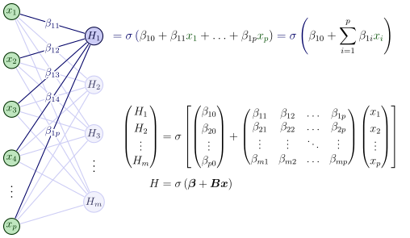
As we add more layers, each of the first set of hidden units is similarly connected to the hidden units in the next layer, and so on. The layers do not have to use the same activation function. Also, the layers can be specialized, such as the image processing layers shown in Figure 1.3. For each hidden layer, we have to specify the number of units and the activation function. These, along with the number of layers, are tuning parameters.
Note that the units in the subsequent hidden layer are nested inside linear combinations of the previous hidden layers (plus the input units). These models have sets of nested nonlinear functions and can be very complex, but are mathematically tractable.
For the final layer, the previous set of hidden units is often connected to the output units using a linear activation. For classification, there are often C output units (i.e., one for each class):
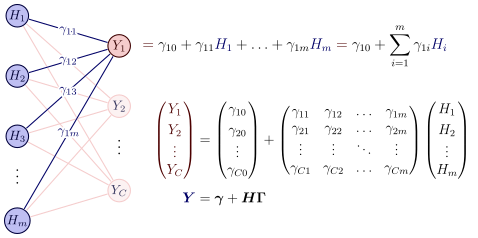
Since a linear activation is used in the final layer, the output units (Y) are unlikely to be in the proper units for classification. To remedy this, the raw outputs are normalized to be probability-like via the softmax function:
\pi_{k} = \frac{\exp(Y_{k})}{\sum\limits_{k=1}^C \exp(Y_{k})}
In this section, we’ll describe the important elements of multilayer perceptrons, such as the different types of activation functions. We’ll walk through a small but specific model.
In later sections, we’ll also spend considerable time discussing various methods for training MLPs.
18.1.1 Activation Functions
Historically, the most commonly used nonlinear activation functions were sigmoidal. This means that the linear combination of the elements in the previous layer was converted into a “squashed” format, typically bounded (e.g., logistic activation values range between 0 and 1). Figure 18.2 shows several such functions. The logistic (Equation 16.3) function and hyperbolic tangent are fairly similar in shape and were typical defaults.

One issue with bounded sigmoidal shapes, particularly the logistic function, is that they can become problematic when used in conjunction with many hidden layers. Since the logistic function is on [0, 1], repeated multiplication of such values can cause their values to converge to be very close to zero (as seen in Section 17.1.1). This is also true of their gradients, leading to the vanishing gradient problem. This is likely not an issue with shallow networks that have a handful of hidden layers.
The tanhshrink function diminishes the impact of inputs that are in a neighborhood around zero, where it is sigmoidal. For larger input values, the output is linear in the input (with an offset of \pm 1).
In modern neural networks, the rectified linear unit (ReLU) is the default activation function. As shown in Figure 18.3, the function resembles the hinge functions used by MARS: to the left of zero, the output is zero; otherwise, it is linear. Much like MARS, this isolates a region of the predictor space. However, there are a few key differences. MARS hinge functions affect a single predictor at a time, whereas neural network activation functions act on a linear combination of parameters. Also, neural networks with multiple layers recursively activate linear combinations inside the prior layers (and so on).
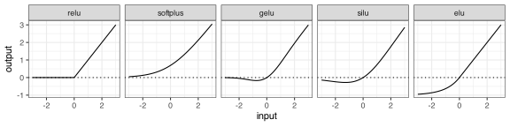
There are various modified versions of ReLU that emulate the same form but have continuous derivatives. These are also shown in Figure 18.3, including softplus (Dugas et al. 2000; Glorot, Bordes, and Bengio 2011), gelu (Hendrycks and Gimpel 2016), silu (Elfwing, Uchibe, and Doya 2018), elu (Clevert, Unterthiner, and Hochreiter 2015), and others. ReLU and its offspring activation functions appear to address the vanishing-gradient problem.
Let’s use an example data set with a simple MLP to demonstrate how ReLU activation works. Figure 18.4 displays the results of a model with a single layer comprising four hidden units, using ReLU activation. The model converged in 100 epochs and does a good job discriminating between the two classes.
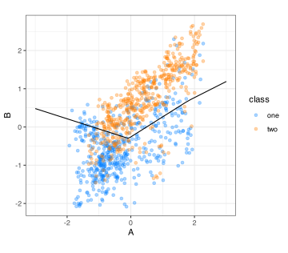
With two predictors and four hidden units, the first set of coefficients for the model is four sets of linear predictors (i.e., an intercept and two slopes) for each of the four hidden units. The predictors were normalized to have the same mean and variance (zero and one, respectively). The four equations produced during training were:
\begin{alignat*}{4} H_{1} &{}={} & & 0.36 & {}-{} & 0.39\,A & {}+{} & 0.51\,B \\ H_{2} &{}={} & - & 0.26 & {}-{} & 0.94\,A & {}-{} & 0.63\,B \\ H_{3} &{}={} & - & 0.09 & {}-{} & 0.02\,A & {}+{} & 0.05\,B \\ H_{4} &{}={} & & 0.35 & {}-{} & 0.41\,A & {}+{} & 0.97\,B \end{alignat*}
The first hidden unit has fairly small coefficients relative to the others. The second is almost equally weighted by both predictors, but with different signs. The slope coefficients within the third unit are also in parity, but both are negative. Finally, the fourth is mostly driven by the second predictor and has the largest intercept (a.k.a. bias) term of the four.
The top of Figure 18.5 displays a heatmap illustrating how these four artificial features vary across the two-dimensional predictor space (before activation). The black line segments show the contour at zero. The first panel shows weak coefficients for the first unit; the light colors indicate a muted effect on the model. The second and third panels show stronger effects and are nearly mirror images. The fourth panel shows the steep slope of the second predictor. The contour shows that most of the effect is in the vertical direction.
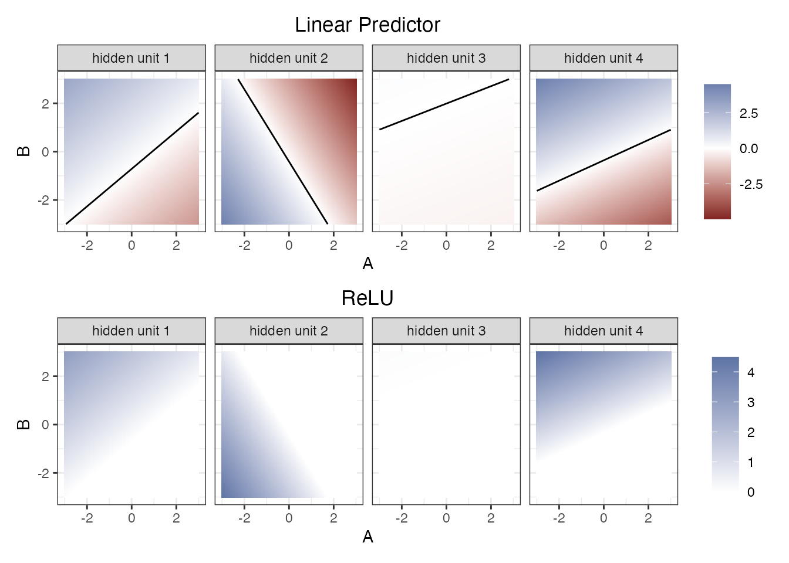
The figure’s bottom panels illustrate the effect of the ReLU function, where values less than zero are set to zero. At this point, H_{2} and H_{4} have the most substantial effect on the model when judged on the sum of their absolute coefficients. From the contour plot, their patterns are nearly opposite.
However, the model estimates additional parameters that merge these regions, using weights estimated to be most helpful for predicting the data. Those equations were estimated to be:
\begin{alignat*}{6} Y_{1} &{}={} & & 0.52 & {}-{} & 0.46\,H_{1} & {}+{} & 0.99\,H_{2} & {}+{} & 0.16\,H_{3} & {}-{} & 0.68\,H_{4} \\ Y_{2} &{}={} & & 0.15 & {}+{} & 0.59\,H_{1} & {}-{} & 0.90\,H_{2} & {}-{} & 0.09\,H_{3} & {}+{} & 0.66\,H_{4} \end{alignat*}
Figure 18.6 illustrates the transition from the hidden layer to the output layer. The weighted sum of the four variables at the top produces the regions of strong positive (or negative) activation for the two classes. Once again, the black curve indicates the zero contour.
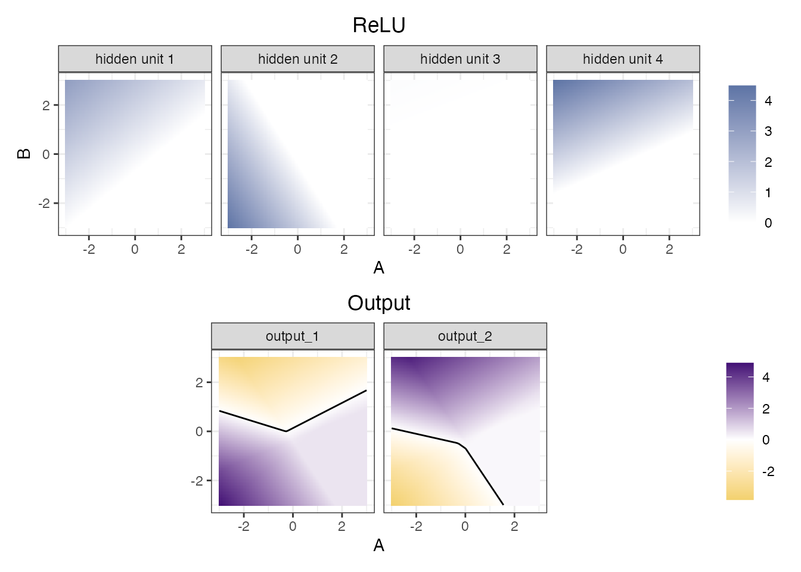
The two output panels at the bottom of the figure show nearly opposite patterns, which is not coincidental. The model converges to this structure, allowing the output units to favor one class or the other. The legend on the bottom right clearly shows inappropriate units; we’d like them to resemble probabilities. As previously mentioned, the softmax function coerces these values to be on [0, 1] and sum to one. This produces the class boundary seen in Figure 18.4.
As previously stated in Section 17.1.2, ReLU is not a smooth function, so this demonstration will differ somewhat from that for other activation functions; they generally don’t completely isolate regions of the predictor space. However, the overall flow of the network remains the same.
Now that we’ve discussed the architecture of these models and how the layers relate to one another, let’s examine how to estimate model parameters effectively.
18.1.2 Training and Optimization
Training neural networks can be challenging. Their model structure is composed of multiple nested nonlinear functions that may not be smooth or continuous. The loss function for classification, commonly cross-entropy, is unlikely to be convex as model complexity increases with the addition of more layers. Consequently, we have no guarantees that a gradient-based optimizer will converge. There is also the possibility of local minima that might trap the training process, saddle points that could lead the search in the wrong direction, and regions of vanishing gradients (Hochreiter 1998).
First is the challenge of local minima. In some cases, ML models can provide some guarantees regarding the existence of a global minimum loss value3. This may not be the case for neural networks. Their loss surface may contain multiple valleys, where the derivatives of some parameters are zero, but a better solution exists in another region of the parameter space. In other words, the model can appear to converge but has suboptimal performance. Baldi and Hornik (1989) show that, under some conditions, single-layer feedforward networks can have a unique global minimum. It is expected that as more layers and units are added, the probability of finding a unique optimal solution decreases. When “caught” in a local valley, we need our optimization algorithm to be able to escape.
A second related issue is saddle points. These are locations where all gradients are zero (i.e., a stationary point), but some directions have increasing loss, while others have decreasing loss. Dauphin et al. (2014) postulate that these will exist, and their propensity to occur increases with the number of model parameters. The concern here is that, depending on the type of multidimensional curvature encountered, the optimization algorithm may move in the direction of increasing loss or become stuck.
Figure 18.7 has an example with two parameters and a highly nonlinear loss surface. There are four stationary points, the best of which minimizes the loss function at \boldsymbol{\theta} = [6.8, 0.2]. The lower right region has a point associated with maximum loss. The other two locations are saddle points. The point at \boldsymbol{\theta} = [6.9, -0.3] is a good example; moving to the left or right of the point will increase the loss. Moving up or down will decrease the loss (with the upper value being the correct choice in this parameter range). Our optimizer should be able to move in the proper direction or, like simulated annealing, recover and move back to progressively better results.
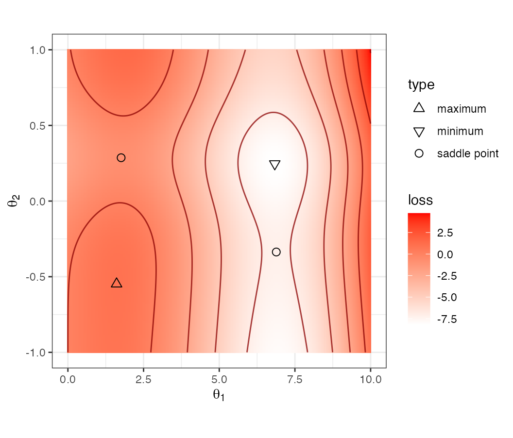
Another possible factor is that many deep learning models are trained on vast amounts of data. This in itself presents constraints on how much data can be held in memory at once, as well as other logistical issues. This may not be an issue for the average application that uses tabular data; however, the problem still persists.
Before proceeding, recall Section 12.2 where gradient descent was introduced. There are two commonly used classes of gradient-based optimization:
First-order techniques: \quad\boldsymbol{\theta}_{i+1} = \boldsymbol{\theta}_i - \alpha\,g(\boldsymbol{\theta}_i),
Second-order methods: \quad\boldsymbol{\theta}_{i+1} = \boldsymbol{\theta}_i - \alpha H(\boldsymbol{\theta_i})^{-1}\,g(\boldsymbol{\theta}_i),
where \boldsymbol{\theta} are the unknown parameters, \alpha is the learning rate, g(\boldsymbol{\theta}_i) is the gradient vector of first derivatives, and H(\boldsymbol{\theta_i}) is the Hessian matrix of second derivatives. The Hessian measures the curvature of the loss function at the current iteration. Pre-multiplying by its inverse rescales the gradient vector, generally making it more effective. We’ll discuss them both in Section 18.1.9 and Section 18.1.10. Generally speaking, second-order methods are preferred since they are more accurate when they are computationally feasible. However, first-order search is more commonly used because it is faster to compute and can be significantly more memory-efficient.
To demonstrate, we can use an MLP model for the forestation data that contains one layer of 30 ReLU units and an additional layer of 5 ReLU units, yielding 677 model parameters. An L2 penalty of 0.15 was set to regularize the cross-entropy loss function. A maximum of 100 epochs was specified, but training was instructed to stop after five consecutive epochs with a loss increase (measured using held-out data). An initial learning rate of \alpha = 0.1 was used, but a variable, step-wise rate schedule was implemented to modulate the rate across epochs, as described below.
The model was first trained using basic gradient descent. For illustration, training was executed five times using different initial parameter values. The leftmost panel in Figure 18.8 shows the results. In each case, the loss initially decreased in the first set of epochs. However, in each case, the model used all 100 epochs. This approach was not very successful. There was little reduction in the loss function, and the terminal phase showed only a minuscule decrease, with no meaningful improvement. This could be due to the search approaching the saddle point. In this case, the gradient becomes very close to zero, and first-order gradient searches have tiny, ineffective updates. We can measure the efficiency of optimizers by computing the time required to complete a full training iteration. For gradient descent, the time was 0.013s per iteration.

When training neural networks, stochastic gradient descent (SGD) is the standard approach. SGD uses randomly allocated batches of training set samples. The gradient search is updated by processing each of these batches until the entire training set has been used, which signifies the end of that epoch. In other words, a potentially large number of parameter updates are computed based on a small number of training point samples. The batch size used here was 64 data points. As a result, for this training set size, about 76 gradient updates are executed before the model has seen all of the training data.
For stochastic gradient descent, we track the process by epochs. An epoch is finished when the model has been updated using every data point in the training set. For this analysis, this means there are about 76 parameter updates per epoch. For regular gradient descent and second-order search methods, we’ll count their progress in terms of iterations, since there are no batches.
As shown in Figure 18.8, SGD performs far better than plain GD, and although none of them stop early, there is a relatively flat trend after about 20 epochs, where the search does not substantially reduce the loss. In terms of time per epoch, SGD takes much longer than GD at 0.163s.
As we’ll see in the section below, many extensions to SGD have made it more effective. One improvement is to use Nesterov momentum (Sutskever et al. 2013). This initially computes a standard update to the parameters, then approximates the gradient at this position to compute a second prospective step. The actual update that is used is the lookahead position. This technique yields better results than SGD, with several iterations stopping early. However, the training time was longest, using 0.24s per epoch.
The intended takeaways from this exercise are that training these models can be challenging and that the type of parameter optimization can significantly impact model quality.
Let’s discuss a few operational aspects of gradient-based methods before discussing the first- and second-order search techniques.
18.1.3 Initialization
Network parameter initialization can significantly impact the success of training. Given the size and complexity of these models, it is nearly impossible to analytically derive optimal methodologies for setting initial values. As such, parameters are initialized using random numbers. This means that different initial values will result in different model parameter estimates.
There are a few approaches for simulating initial values. LeCun et al. (2002) initialization uses a uniform distribution centered around zero with limits defined by the number of connections feeding into the current node (known as the “fan in” and is denoted as m_{in}). They used U(\pm \sqrt{2/m_{in}}) as the distribution. There have been a few variations of this:
- Glorot/Xavier initialization (Glorot and Bengio 2010): U(\pm \sqrt{6/(m_{in}+m_{out})})
- He/Kaiming initialization (He et al. 2015): N(0, \sqrt{2 / m_{in}}).
where m_{out} is the number of parameters leaving the node.
One reason that initialization is important is to help mitigate numerical overflow errors. For example, the softmax transformation shown above exponentiates the raw output units (and sums them). If the output units have relatively large values, exponentiating and summing them can exceed allowable tolerances. For example, the output units shown in Figure 18.6 have a wide enough range that can be as large as 5.
18.1.4 Preprocessing
Neural networks require complete numeric features for computations.
For non-numeric data, the tools described in Chapter 6 can be very effective. Additionally, there are pretrained neural network models that can translate the category string to a word embedding (Boykis 2023), such as BERT (Devlin et al. 2019) or GPT-4 (Achiam et al. 2023). The potential upside to doing this is that the resulting numeric features may measure some relative context between categorical values. For example, suppose we have a predictor with levels red, darkred, green, chartreuse, and white. Basic encoders, such as binary indicators or hashing features, would not recognize that there are three clusters in these values and that sets such as {red, darkred} and {green, chartreuse} should have values that are “near” one another. LLMs can measure this semantic similarity and potentially generate more meaningful features.
If the non-numeric predictors are not complex, a layer could be added early in the network, enabling the model to derive encodings from the data during training. Guo and Berkhahn (2016) describes a relatively simple architecture for doing this. While LLMs are better at creating embeddings overall, they are unaware of the context in your data. Estimating the parameters associated with a simple embedding layer may be more effective, since it is optimized for your dataset.
For numeric predictors, we suggest avoiding irrelevant predictors and highly collinear feature sets4. Figure 13.1 in Chapter 13 demonstrated the harm of including predictors unrelated to the outcome in a neural network. Multicollinearity can also affect these models, even if we do not invert the feature matrix or use the Hessian during optimization. Highly redundant predictors can result in the loss function having undesirable characteristics and a large number of unnecessary parameters. Using an L2 penalty or a feature extraction method can be very helpful.
Also, predictors with highly skewed distributions might benefit from a transformation to make their distribution more symmetric. If not, outlying values can exert significant influence in computations, potentially preventing the generation of high-quality parameter estimates.
A critical preprocessing technique is to help ensure that only informative predictors are present in the training set. Looking back at Figure 13.1, the simulation results show that including a moderate number of noisy predictors in the training set can substantially reduce performance. In this simulation, performance fell by up to 40% compared with results where all predictors were relevant.
Finally, since the networks use random initialization, we should ensure that our predictors are standardized to have the same units. If there are only numeric predictors, centering/scaling or orderNorm operations can be very effective5. Using this approach, we must also apply the same standardization to binary indicators created from categorical predictors. Alternatively, we could leave 0/1 indicators as-is, but range scales our predictors to lie between 0 and 1. This may have a disadvantage; the range will be common across predictors, but the mean and variance can be quite different.
18.1.5 Learning Rates
The learning rate (\alpha) can profoundly affect model quality, perhaps more than the structural tuning parameters that define complexity (e.g., number of hidden units). A high learning rate (\approx 0.1) will help converge towards effective parameter estimates, but once there, it can cause the model to consistently overshoot the best location. One approach to modulating the rate is to use a scheduler (Lu 2022,chapt 4). These are functions/algorithms that will change the rate (often to decrease it) over epochs. For example, to monotonically decrease the rate, two options are:
- inverse decay: f(\alpha_0, \delta, i) = \alpha_0/(1 + \delta i)
- exponential decay: f(\alpha_0, \delta, i) = \alpha_0\exp(-\delta i)
where i is the epoch number and \delta is a decay value. These two functions gradually decrease the rate so that, when near an optimum, it is slow enough not to exceed the optimal settings. Another approach is a step function that decreases the rate while maintaining it at a constant level over a range of epochs. Those ranges can be predefined or dynamically adjusted to decrease as the loss function decreases. The function for the former is:
- step decay: f(\alpha_0, \zeta, r, i) = \alpha_0 \zeta^{\lfloor i/r\rfloor}
where \zeta is the reduction value, r is the step length, and \lfloor x\rfloor is the floor function.
Finally, some schedulers modulate the rate up and down. A cyclic schedule (Smith 2017) starts at a maximum value, decreases to a minimum value, and then increases cyclically. For some range r and minimum rate \alpha_0, an epoch’s location within the series is cycle = \lfloor 1 + (i / (2r) )\rfloor and the rate is
- cyclic: f(\alpha_0, \alpha, r, i) = \alpha_0 + ( \alpha - \alpha_0 ) \max(0, 1 - x)
where x = |(i/r) - (2\,cycle) + 1|. This is a good option when we are unsure how quickly or slowly convergence will occur. If the rate is too high near an optimum value, it will soon decrease to an appropriate value. Additionally, if the search is stuck in a local optimum (or a saddle point), increasing the learning rate may help it escape.
Figure 18.9 uses the loss function example from Figure 18.7 to demonstrate the effect of rate schedulers. Two starting points are used. One (in orange) is very close to a saddle point, while the other starts from the upper right corner of the parameter space (in green).
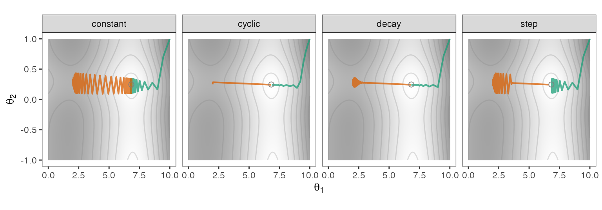
Using a constant learning rate of \alpha = 0.1, the search marches to the optimum value, but oscillates wildly on approach. Ultimately, it falls short of the best estimates, as it is constrained to make large jumps on each iteration. The cyclic schedule allowed rates to move between \alpha_0 = 0.001 to \alpha = 0.1 with a cycle range of r = 10 epochs. This appears to work well, or at least, it had good timing. The decay panel represents inverse decay with \delta = 0.025. For the corner starting point, this is a very effective strategy. From the saddle point, we can observe that decreasing the learning rate results in fewer oscillations as the search progresses and eventually leads to the optimum. Finally, the panel for stepwise reduction used an initial learning rate of \alpha_0 = 0.1, \zeta = 0.5, and a step length of 20 epochs. This approach worked well when the search began from the saddle location, but performed poorly when starting at the corner. The success depended on when the search was near the optimum; if not timed right, the oscillations were too wide to converge on the best point. A reduction in the step length might help.
The schedule type and its additional parameter(s) are added to the list of possible values that could be optimized during tuning.
18.1.6 Regularization
As seen in a previous chapter, we can add a penalty to the loss function to discourage particularly large model coefficients. This is especially beneficial for neural network models.
While Hanson and Pratt (1988) and Weigend, Rumelhart, and Huberman (1990) made early proposals for penalizing the size of estimated parameters, Krogh and Hertz (1991) proposed using L2 regularization to improve generalization. This is now a standard approach for training neural networks, and “weight decay” is now synonymous with squared penalties.
While either L1, L2, or a mixture of the two can be used, there is some reason to use just L2 penalization. While either type of penalty might be able to combat multicollinearity, the quadratic penalty has the advantage of maintaining a smooth loss surface. With an L1 penalty, we have at least one point on the loss surface that is not differentiable. Also note that using the L1 penalty will not produce exact zeros in the parameter estimates when using stochastic gradient descent.
As we will describe later in this chapter, Loshchilov and Hutter (2017) note that there are cases when penalizing the loss function does not precisely match the definition of weight decay (in the neural network context of Hanson and Pratt (1988)). Their adjustment for these issues is called the “AdamW” method.
Another regularization technique is called dropout. This method randomly removes some units (hidden or not) from the network. This drops incoming and outgoing connections to other units, which propagates across all layers. These temporary coercions to zero recur with each gradient evaluation. In the final training step, a full set of parameters is used. Dropout has an effect similar to averaging many smaller networks. The dropout rate should be tuned.
18.1.7 Early Stopping
When should training stop? We can estimate the number of epochs that might be needed, but if we make an incorrect guess, we risk under- or overfitting the model. It makes sense to include the number of epochs as a tuning parameter, but this could be costly6.
If we have some data to spare, an efficient and effective approach is to use early stopping. If we set aside a small proportion of the training set to measure the search’s progress, we can set the maximum number of epochs and stop training when the loss worsens (based on our holdout set). Often, we can tune the number of “stopping epochs”. If this value were five, we would stop training after five consecutive epochs where the loss function worsens (and use the parameter estimates from our last best epoch). Values greater than one protect against overreacting when the loss profile is noisy.
18.1.8 Batch Learning
Operationally, within each epoch, a random batch is selected to evaluate the gradient and correspondingly update the parameters. This occurs for each batch until the entire set is evaluated. This is the end of the epoch. If we are monitoring a holdout set for early stopping, this is the point at which we evaluate the loss function at the current parameter estimate using the holdout set. After this, the process begins again by iterating through the batches.
SGD is thought to work well because it injects considerable variation into the gradients and updates. This would generally be considered a bad thing, but, as with simulated annealing, it makes the optimization less greedy. The somewhat noisy directions the optimizer takes can help it escape local optima and be more resilient when the search veers near a saddle point or other regions where the gradient may be flat or consistently zero. Hoffer, Hubara, and Soudry (2017) referred to SGD as a “high-dimensional random walk on a random potential” process.
As the search proceeds, lowering the learning rate can mitigate the extra noise in the gradients so that, hopefully, the search does not move away from the best parameter estimates.
We can tune the batch size if there is no intuition for what a good value might be. Smallish batch sizes could range from 16 to 512 training set points7, depending on the training set size. Keskar et al. (2016) remarks that smaller batches tend to explore the parameter space more thoroughly and that, as the batch size becomes larger, SGD will find a solution that is closer to the initial values.
Loshchilov and Hutter (2017) make a few interesting observations related to L2 penalization with stochastic gradient descent. Their results show that as the number of batches increases, the optimal penalty decreases. In other words, as the batch size decreases, the amount of penalization should also decrease.
18.1.9 Gradient Descent Algorithms
Gradient descent methods for training neural networks have become a popular research topic over the last 15 years. We’ll discuss a few major techniques here, but there are myriad other tools for training these models. In this section, we’ll temporarily forgo discussing changes from epoch to epoch. Since we are focused on SGD, we’ll use the term “update” to refer to the point at which the parameters move to a different location after a batch step.
Momentum
To start, let’s consider a more common form of momentum in gradient search8 Momentum is a useful tool that can help in situations such as the results in Figure 18.9, where the updates make the search path make large, ineffective jumps. When the learning rate is consistently large, the search route bounces back and forth since the gradients are substantial in magnitude but moving in different consecutive directions.
Momentum is one of several tools to adjust the gradient vector based on previous gradients. For iteration i, a vector is computed that is a combination of the current and previous gradients9:
v_i = \phi v_{i-1} + \alpha_i g(\boldsymbol{\theta}_i)
and this is used to make the update \boldsymbol{\theta}_{i+1} = \boldsymbol{\theta}_i - v_i. This weighting system emphasizes recent gradients while also accounting for previous gradients. This can accelerate the search and diminish oscillations.
Values of \phi typically range from 0.8 to 0.99, representing a weighted average of previous gradient directions, with greater emphasis on recent iterations as \phi increases. If the directions have been fairly stable, there is little change; however, if they are oscillating, the direction takes a more consistent central route with fewer directional jumps. It also helps if the search is in a region where gradients are close to zero; historical gradients will have some non-zero values that are unlikely to become stuck with updates near zero.
Figure 18.10 shows the results when momentum is used for our 2D toy example10. The cyclic rate settings were used in this example, and the results are very similar to those from the previous path when initialized near the saddle point. The corner-point starting value shows that momentum can lead to a location near the optimal value but takes a more circuitous route.
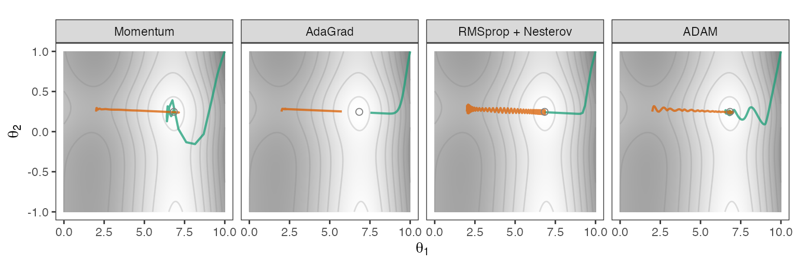
Momentum should be used in conjunction with a rate scheduler, or at the very least, without a consistently large learning rate. Making very large jumps in a central direction might lead the search to points far away from regions of improvement. Penalization also helps.
Adaptive Learning Rates
There is also a class of gradient descent methods that try to avoid using a single learning rate for all of the elements of \boldsymbol{\theta}. Instead, they use a constant learning rate and, at each update, adjust the rate using functions of the gradient vector so that the rates are different from each \theta_j.
One approach is the adaptive gradient algorithm, a.k.a. AdaGrad (Duchi, Hazan, and Singer 2011), that scales the constant learning rate \alpha by the accumulated square of the gradients:
\boldsymbol{v}_i =\sum_{b=1}^t g(\boldsymbol{\theta}_b)^2 so that
\boldsymbol{\theta}_{i+1} = \boldsymbol{\theta}_i - \frac{\alpha}{\sqrt{\boldsymbol{v}_i + \epsilon}}\, g(\boldsymbol{\theta}_i)
where \epsilon is a small constant to avoid division by zero. The square root in the denominator is required to keep the denominator units the same as those in the numerator. AdaGrad has the advantage of keeping the adjusted learning rate steady for elements of g(\boldsymbol{\theta}) that do not change substantially from update to update. At update i, the contribution to the learning rate is inversely proportional to the squared gradient value.
The problem is the unweighted accumulation of squared values. For a reasonable number of updates, elements of \boldsymbol{v} can explode to very large values, and this prevents almost any movement of \boldsymbol{\theta} from update to update. For the example shown in Figure 18.10, some of these values were in the thousands, and progress clearly halted before reaching the optimal parameters.
One method of fixing this problem is RMSprop (Hinton 2012). Here, the denominator uses an exponentially weighted moving average of the squared gradients:
\boldsymbol{v}_i = \rho\, \boldsymbol{v}_{i-1} + (1 - \rho)\, g(\boldsymbol{\theta}_i)^2
This formulation places more weight on the current and recent gradients than the statistic used by AdaGrad. The RMSprop update becomes:
\boldsymbol{\theta}_{i+1} = \boldsymbol{\theta}_i - \frac{\alpha}{\sqrt{\boldsymbol{v}_i + \epsilon}}\, g(\boldsymbol{\theta}_i).
The “RMS” in the name is due to taking the square root of the weighted sum of squared gradients (i.e., similar to a traditional root mean square).
Goodfellow, Bengio, and Courville (2016) suggested using RMSprop with Nesterov momentum. This leads to a more complicated procedure. First, we compute our initial update: \quad\tilde{\boldsymbol{\theta}}_{i} = \boldsymbol{\theta}_{i} - \phi\,\boldsymbol{\delta}_{i-1} where \boldsymbol{\delta}_0 is initialized with a vector of zeros. We compute the gradient at this temporary update and use this to compute \boldsymbol{v}_i. From here:
\boldsymbol{\delta}_{i} = \phi\,\boldsymbol{\delta}_{i-1} - \frac{\alpha}{\sqrt{\boldsymbol{v}_i + \epsilon}}\, g(\tilde{\boldsymbol{\theta}}_i)
The results are in Figure 18.10. The curves are similar to those for AdaGrad except that they do reach the location of minimum loss. The path for the starting value near the saddle point exhibits several minor oscillations en route to the optimal result.
The adaptive moment estimation (Adam) optimizer from Kingma and Ba (2017) extends the moving average approach to the gradient term as well:
\begin{align} \boldsymbol{m}_i &= \phi\, \boldsymbol{m}_{i-1} + (1 - \phi)\, g(\boldsymbol{\theta}_i) \notag \\ \boldsymbol{v}_i &= \rho\, \boldsymbol{v}_{i-1} + (1 - \rho)\, g(\boldsymbol{\theta}_i)^2 \notag \end{align}
Adam also tries to normalize these quantities so that the first few updates have larger values:
\begin{align} \boldsymbol{m}^*_i &= \frac{\boldsymbol{m}_i}{1 - \phi^i}\notag \\ \boldsymbol{v}^*_i &= \frac{\boldsymbol{v}_i}{1 - \rho^i} \notag \end{align}
This helps offset the initialization of \boldsymbol{m}_0 = \boldsymbol{v}_0 = \boldsymbol{0}. At update i, Adam’s proposal is
\boldsymbol{\theta}_{i+1} = \boldsymbol{\theta}_i - \frac{\alpha}{\sqrt{\boldsymbol{v}^*_i + \epsilon}}\,\boldsymbol{m}^*_i.
The results above show that Adam’s path towards the optimal parameters is slightly wobbly compared to RMSprop but otherwise effective.
Both \phi and \rho are tunable in these models and typically range within [0.8, 0.99]. The constant learning rate \alpha is also tunable. In Figure 18.10, \phi=\rho=0.9. AdaGrad, Adam, and RMSprop used \alpha = 0.1. For RMSprop, decreasing the learning rate to \alpha = 0.08 removed the oscillations shown in Figure 18.10.
As alluded to earlier, Loshchilov and Hutter (2017) noted that, for Adam, penalizing the loss function does not align with the definition of weight decay. Without a remedy, they found that Adam is not as effective as it could be. Their method, called AdamW, includes the penalty in the gradient definition. The gradient used to compute \boldsymbol{m}_i and \boldsymbol{v}_i is a combination of the previous “raw” gradient and the penalty (\lambda):
g(\boldsymbol{\theta}_i) = \nabla \psi(\boldsymbol{\theta}_{i}) - \lambda \boldsymbol{\theta}_{i}
The updating equation also uses an extra term containing the penalty:
\boldsymbol{\theta}_{i+1} = \boldsymbol{\theta}_i - \alpha_i\left[\frac{\boldsymbol{m}^*_i}{\sqrt{\boldsymbol{v}^*_i + \epsilon}} + \lambda \boldsymbol{\theta}_{i}\right].
Note that the learning rate \alpha now has a subscript. They also recommend trying a cyclic learning rate scheduler with AdamW.
AdamW has become very popular for training and has superseded Adam.
Other Methods
As previously mentioned, there are numerous other variations of SGD that will not be discussed here, including AdaMax (Diederik and Ba 2015), Nadam (Dozat 2016), MadGrad (Defazio and Jelassi 2021), and others.
18.1.10 Newton’s Method
As previously shown, Newton’s method (a.k.a., the Newton–Raphson method) uses both gradients and the Hessian matrix to update parameters. This approach can be very effective when the local loss surface can be approximated by a second-degree polynomial. When the local search includes a stationary point, the signs of the eigenvalues of the Hessian can characterize it: all non-negative imply a maximum, all non-positive imply a minimum, and mixed signs indicate a saddle point.
One issue with the method concerns the Hessian. If there are p parameters, the matrix needs to save p(p+1)/2 parameters. For neural networks, p can be in the millions, so the basic application of Newton’s method can be slow and might require infeasible amounts of memory (depending on the model size). We also need to invert the Hessian, making it even more costly.
We can approximate Newton’s method using the Limited-memory Broyden–Fletcher–Goldfarb–Shanno (L-BFGS) search (Lu 2022, chapt 6). It uses past gradients to approximate the Hessian as the search proceeds. L-BFGS computes gradients at different values of \boldsymbol{\theta} for more than just updating the parameters (i.e., Hessian approximation and the line search), so it is not a good solution when the loss function or gradient evaluations are expensive.
However, if we have a small dataset, a low-to-medium-complexity architecture, or both, L-BFGS can be a very effective tool for parameter estimation.
18.1.11 Forestation Modeling
For the forested data, there are a few options for preprocessing:
- Use binary indicators to represent the 39 counties or a supervised effect encoding strategy.
- Several predictors are highly skewed. We can leave them as-is before centering/scaling, or use an orderNorm transformation to coerce each predictor to a standard normal distribution.
- Deal with the high correlation for some predictors via PCA extraction or leave as-is in the data.
Several combinations of these operations were used:
- An effect encoding with and without PCA feature extraction.
- Standard binary indicators with and without PCA feature extraction and with and without a symmetry transformation (i.e., orderNorm versus centering/scaling).
For the PCA extraction, all possible components were used.
For the model, there are a fair number of tuning parameters to combine:
- One or two layers.
- The number of hidden units. For each layer, these ranged from two to fifty units.
- The activation type: ReLU, elu, tanh, and tanhshrink.
- L2 regularization values between 10-10 and 10-1.
- Batch sizes between 23 and 28.
- Learning rates between 10-4 and 10-1.
- Learning rate schedules: constant, cyclic, and time decay.
- Momentum values between [0.8, 0.99].
AdamW was used to train the models, with a maximum of 25 epochs, but early stopping could occur after 5 consecutive epochs of poor performance.
A space-filling design with 25 candidates was evaluated. The six preprocessing schemes listed above were each run with the same model grid, resulting in 300 candidates to be evaluated.
Figure 18.11 shows the results for the 300 candidates. They are ranked by their resampling estimate of the Brier scores, and the figure presents these rankings from best to worst, breaking out the combinations of preprocessing scenarios. While each panel contains models with sufficiently low Brier scores, several trends are evident. The “Indicators” panel represents models that use dummy-variable indicators and no symmetry transformation. This did not perform well (with or without PCA feature extraction).

In fact, PCA has suboptimal results in each of the three bottom panels. This could be due to the components being unsupervised; they are not optimized for prediction. Alternatively, the last few components might be measuring noise and have less relevance to the model. Adding irrelevant predictors to neural networks can diminish their effectiveness.
The two cases that did the best were the “Indicators + Symmetry” and “Effect Encoding + Symmetry” panels. While both used the orderNorm transformation, the former panel employed indicators, whereas the latter used a supervised effect encoding, in which a single column represented the county effect. This suggests that eliminating distributional skew in the predictors may yield a modest improvement in predictive performance.
| Preprocessing | Architecture | # Parameters | Penalty | Batch Size | Learning Rate | Momentum |
Performance
|
|
|---|---|---|---|---|---|---|---|---|
| Brier | ROC | |||||||
| Indicators, Symmetry, No PCA | 16 elu | 898 | 10-10.00 | 19 | 10-2.50 (inverse decay) | 0.816 | 0.0789 | 0.9511 |
| Indicators, Symmetry, No PCA | 30 relu , 2 elu | 1688 | 10 -4.00 | 256 | 10-2.88 (cyclic) | 0.903 | 0.0791 | 0.9497 |
| Indicators, Symmetry, No PCA | 42 relu | 2354 | 10 -4.00 | 21 | 10-1.25 (cyclic) | 0.808 | 0.0797 | 0.9510 |
| Indicators, Symmetry, No PCA | 44 tanh | 2466 | 10 -8.12 | 80 | 10-3.25 (cyclic) | 0.824 | 0.0801 | 0.9493 |
| Indicators, Symmetry, No PCA | 10 elu , 24 elu | 854 | 10 -9.62 | 33 | 10-3.00 (cyclic) | 0.919 | 0.0804 | 0.9497 |
Digging in further, Table 18.1 displays the top five candidates from a pool of 300. They are a mixture of one- and two-layer networks, but note that we have to go to the third decimal place to distinguish their Brier scores. Constant learning rates performed well as long as the rates were fairly low and the batch sizes were fairly small. The number of parameters also varied; increasing the model’s complexity did not appear to help on this data set. In fact, the rank correlation between the Brier score and the number of parameters was 0.12, indicating little evidence that adding more layers and/or units to the MLP improves the model on these data.
The Brier scores are low, and the areas under the ROC curves are all at least 0.94, indicating that the predictions effectively separate the classes and that the probability estimates are accurate. Across the candidates, the rank correlation between the Brier score and the ROC AUC was -0.93; in this case, the optimization results are well aligned.
18.2 Modern Tabular Network Models
18.2.1 In-Network Normalization
We previously noted that substantial preprocessing is required for our original predictors. Wiesler et al. (2014) notes that the effects of this initial preprocessing can vanish as more layers are added to the network; there is no guarantee that the hidden units in later layers will have distributional properties that encourage convergence.
Consider the example in Section 18.1.1 where, for a basic MLP model with ReLU activation, large portions of the parameter space have values of absolute zero. No matter the distribution entering the layer, the outputs are likely to have a large point mass at zero and perhaps a second distributional mode.
For example, Figure 18.12 shows the distribution of a specific hidden unit in a model from Figure 18.4, albeit with a larger batch size, showing how it changes over batches and epochs. The red bar shows how often absolute zero values occur. Within a batch, the point mass at zero can fluctuate over epochs. Given that the activated values must be non-negative, the distributions can become fairly skewed over epochs, although two of the distributions are somewhat bell-shaped for non-zero values. In any case, the values have certainly deviated from the centered and scaled distributions of the original predictor values.
Wiesler et al. (2014) suggested that standardizing the embeddings at different points within the network could yield the same benefits for the model as initial standardization. Their solution was to use batches during SGD to compute a running mean of the model’s internal features and to center the embeddings.
Ioffe and Szegedy (2015) took this idea a few steps further to minimize covariate shifts between batches. Their approach, called batch normalization (a.k.a. “BatchNorm”), standardizes the current embeddings with some extra parameters:
\tilde{H}_J = b\left(H_j\right) = \frac{H_j - \bar{H_j}}{\sqrt{s_j^2 + \epsilon}}\, \theta_1 + \theta_2
where \epsilon is a small constant and \bar{H_j} and s_j^2 are the estimated mean and variance of embedding j, respectively. Recall that during SGD, small batches of the training set are used. The sample mean and variance are computed on the current mini-batch of data, and a moving average of their values is maintained. The extra term \theta_1 estimates a scale shift and \theta_2 estimates a location shift. These are learned parameters; they are estimated via gradient descent. After training, new samples being predicted are normalized using moving-average statistics based on the means and variances produced in the min-batches.
In Ioffe and Szegedy (2015), batch normalization occurs between the formation of a new linear predictor transformation and the application of a nonlinear activation. For example, this would have occurred between the two rows of variables shown in Figure 18.5. However, He et al. (2016) showed that “pre-activation” works better for their model. This means normalization occurs before forming the linear combination, which is also what Gorishniy et al. (2021) suggests for tabular data.
BatchNorm doesn’t increase the model’s predictive capacity; it generally lowers the difficulty level of SGD. It is unclear how. There is some dispute as to whether the correction for covariate shifts is the reason for its effectiveness. There is some belief that BatchNorm smooths the objective function (Santurkar et al. 2018; Peng, Yu, and Yu 2023).
Two other in-network normalizations to mention are LayerNorm (Ba, Kiros, and Hinton 2016) and RMSNorm (B. Zhang and Sennrich 2019). Both of these normalize across the embeddings per sample. For example, LayerNorm computes a mean and standard deviation across features for a single row. RMSNorm also operates across features, but divides them by the square root of the sum of the squared values. Note that if the features have a distribution centered around zero, this is the same as the spatial-sign transformation Equation 5.1 that projects the data to a hypersphere of radius \sqrt{p} (instead of 1.0). As such, RMSNorm imparts some robustness against unusually large feature values and constrains the range of the normalized values.
18.2.2 Residual Networks
Residual networks, a.k.a. ResNet, modify the basic MLP architecture by adding skip connections: the input to each block is added directly to the block’s output before passing to the next layer11.
Let’s illustrate this using an MLP where the number of hidden units in each of the three layers is the same as the number of predictors (p), as shown on the left:
\overbrace{ \begin{aligned} \boldsymbol{H}_1 &= f_1(\boldsymbol{x}) \notag \\ \boldsymbol{H}_2 &= f_2(\boldsymbol{H}_1) \notag \\ \boldsymbol{H}_3 &= f_3(\boldsymbol{H}_2) \notag \\ \boldsymbol{Y} &= f_4(\boldsymbol{H}_3) \notag \end{aligned} }^{\text{Standard MLP}} \qquad\qquad \overbrace{ \begin{alignedat}{3} \boldsymbol{H}_1 &{}={} & f_1(\boldsymbol{x}) &{}+{} &\boldsymbol{x} \notag \\ \boldsymbol{H}_2 &{}={} & f_2(\boldsymbol{H}_1) &{}+{} &\boldsymbol{H}_1 \notag \\ \boldsymbol{H}_3 &{}={} & f_3(\boldsymbol{H}_2) &{}+{} &\boldsymbol{H}_2 \notag \\ \boldsymbol{Y} &{}={} & f_4(\boldsymbol{H}_3) \notag \end{alignedat}}^{\text{Residual Connections}} \tag{18.1}
For the MLP architecture, the idea is that ordinary feed-forward networks are tasked with learning, at each layer, a better representation of the outcome via f_i(\cdot). This parameterization may be difficult to optimize because changes between layers may be very small, leading to potential issues with gradient magnitudes.
A residual network, shown on the right-hand side of Equation 18.1, takes the current features prior to the hidden layer and adds them back into the embeddings (post-activation). In other words, the skip comes before f_i(\cdot) and is added to the result after f_i(\cdot) applies its activation. We’ll use the term residual block to describe the operations shown in each of the top three rows of the right-hand side.
By adding the previous embeddings to this function, we’ve reframed the problem so that we are really learning f_i(\boldsymbol{H}_{i-1}) = \boldsymbol{H}_i - \boldsymbol{H}_{i-1}; a residual.
This process makes training easier, especially for models with many layers. Early practitioners assumed that performance could be increased simply by adding more layers. This was not the case. He et al. (2016) showed that large models paradoxically saw both training and test error increase as the number of layers increased. This isn’t believed to be related to overfitting, but due to how gradients flow through the system during optimization. Residual connections address this by giving gradients a direct path back through the network: for layer i, the gradient is f_i'(\boldsymbol{H}_{i-1}) + I. If we add too much capacity to the model (e.g., more layers), it can simply estimate zero for the residual. Also, the extra term I in the gradient prevents them from becoming too small across the network, even if f_i'(\boldsymbol{H}_{i-1}) has elements that are approximately zero. We’ll describe other potential benefits to this model towards the end of this section.
He et al. (2016) is generally credited for the ResNet model. It showed significant improvements for convolutional neural networks for image analysis. For tabular data, we’ll focus on the formulation in Section 3.2 of Gorishniy et al. (2021). With this model, we’ll refer to the elements being added as the “skip path” and the other components (e.g., nonlinear activation) as the “main path”.
Let’s get back to the particulars. Our equations on the left-hand side of Equation 18.1 are unrealistic, as they assume the embedding dimension remains the same size as the predictor dimension throughout the network. Once we loosen that constraint, additional considerations are required to align the dimensions
Suppose we begin with p=2 predictors within \boldsymbol{x}. Suppose we use a “bottleneck” architecture in which the hidden layers have output dimensions (10, 3, 10). If \boldsymbol{H}_1 is (10 × 1) and \boldsymbol{x} is (2 × 1), how can we add those to one another?
The answer is that we use a parameter matrix to form a linear combination of the inputs, thereby achieving the correct dimensionality (i.e., projecting the inputs to the correct dimensions). For the first hidden layer, the skip path adds \boldsymbol{P}_1\boldsymbol{x} where \boldsymbol{P}_1 is a (10 × 2) projection matrix. This generates a version of the original predictors that has the correct size.
We also need to project the inputs again for the main path, where activation is applied. We’ll use a different matrix of parameters (\boldsymbol{W}_1) that is the same size as \boldsymbol{P}_1. Both matrices coerce the input to the correct dimension, but serve different purposes:
- \boldsymbol{P}_1\boldsymbol{x} should represent the original input as plainly as possible in order to produce an appropriate residual effect.
- \boldsymbol{W}_1^{(1)}\boldsymbol{x} is designed and estimated to support the nonlinear activation via f_1(\bullet) so that it can learn better outgoing embedding.
The elements of both of these matrices are learnable. The first residual block is:
\boldsymbol{H}_1 = \boldsymbol{W}_1^{(2)}f_1\left(\boldsymbol{W}_1^{(1)}\boldsymbol{x}\right) + \boldsymbol{P}_1\boldsymbol{x}
where \boldsymbol{W}_1^{(2)} is a (10 × 10) parameter matrix that enables more effective linear combinations of the activated inputs. It adds predictive capacity. The number of rows in \boldsymbol{W}_1^{(1)} must be the same as the number of columns in \boldsymbol{W}_1^{(2)}. These features are sometimes called the bottleneck units. The number of rows in \boldsymbol{W}_1^{(2)} represents the number of hidden units given to the next layer. The matrix need not be square; it may be advantageous to tune it to have more or fewer dimensions than the bottleneck.
The next two layers also have projection matrices that are (3 × 10) and (10 × 3) for the bottleneck pattern. The equation for future blocks is:
\boldsymbol{H}_j = \boldsymbol{W}_j^{(2)}f_j\left(\boldsymbol{W}_j^{(1)}\boldsymbol{H}_{j-1}\right) + \boldsymbol{P}_j\boldsymbol{H}_{j-1} Residual connections are often used with batch normalization. For tabular data, we would apply the BatchNorm operator b(\cdot) to the embeddings within the activation, such as:
\boldsymbol{H}_1 = \boldsymbol{W}_1^{(2)}f_1\left(b(\boldsymbol{W}_1^{(1)}\boldsymbol{x})\right) + \boldsymbol{P}_1\boldsymbol{x}
It is difficult to say exactly why residual connections make it easier to train these models. This is partly because residual connections are almost always used in conjunction with batch normalization, as they were in He et al. (2016).
Li et al. (2018) makes a compelling case that using residual connections greatly smooths the loss surface and eliminates many jagged regions where gradient descent can get stuck. Additionally, Veit, Wilber, and Belongie (2016) shows that ResNet models can be rewritten as an additive structure of submodules that are also networks, but many of them are much shallower. They showed that the model might operate more like an ensemble of simpler models and that some of these modules can be ignored without a detrimental effect on performance.
Let’s move on to discuss a technique that has had a phenomenal impact on the quality of neural networks: attention.
18.2.3 Attention Mechanisms
Attention is a technique that can help a neural network focus on relevant parts of the model to make better individual predictions. It computes a relevance score (an “attention weight”) for each input based on its context and use it to modify the embeddings. We’ll start by discussing the conceptual idea of what attention does, then segue to how we can use it in tabular models12.
Attention weights are typically created using a query/key/value (QKV) system. This is often described as similar to how a database works. For example, if we had a database of information on published books, we could use it to find our next book to read based on our interests. Suppose the database consisted of a collection of keywords, such as nonfiction, romance, history, and so on, that are used to characterize the book’s type and content. The totality of these variables corresponds to the database’s keys.
Our query reflects what we are currently interested in. For example, I might make the query:
I’m interested in a
fictionalmurder-mysteryset in anisolated locationinFrench Canadawithquirkycharacters and aduck.
A database would FILTER on these values to find any rows that match the query. Hopefully, the query will return some values that, in this case, correspond to names for relevant books.
The mathematics of attention mechanisms differ in their tactics, but they pursue the same strategy as the database example above. Attention computes a quantitative similarity score for the data, usually based on dot products, which are scaled to [0, 1]. This is more of a fuzzy-matching system than an exact match would produce with a SQL FILTER.
Attention weights can be computed in different ways, but we’ll focus on the most prevalent approach: dot-product attention. We’ll represent a query containing p features as the vector \boldsymbol{q}, and a database key as \boldsymbol{k}, also with p entries. The dot-product attention weight for these values uses function \mathbb{a}(\boldsymbol{q}, \boldsymbol{k}) = \exp\left(\boldsymbol{q}'\boldsymbol{k}\right) as its kernel. From Section 17.3 we know that this dot product is non-negative, but generally not much more.
Most methods use scaled attention, which uses the softmax function to compute the attention weights:
\mathbb{a}(\boldsymbol{q}, \boldsymbol{k}_i) = \frac{\exp(\boldsymbol{q}'\boldsymbol{k}_i / \sqrt{p})}{\sum_{i'}\exp(\boldsymbol{q}'\boldsymbol{k}_{i'} / \sqrt{p})}, \tag{18.2}
where p is the size of the keys and queries. The square-root terms in the divisors are there to improve numerical computations in cases where p is very large; they stabilize the resulting values.
The function \mathbb{a}(\boldsymbol{q}, \boldsymbol{k}_i) bounds the attention weights to be in [0, 1]. Let’s denote a function \mathbb{S}(\boldsymbol{X}) that performs row-wise softmax on a matrix \boldsymbol{X} and produces a matrix of the same size whose rows sum to one.
We’ll denote original values as the vector \boldsymbol{v}. The values could be any characteristic of our data, and we will assume that these are numbers. For our book example, values could include quantities such as the number of pages, the publisher’s recommended price, etc. Suppose we are interested in the latter. Let’s consider a query that affects a specific key and value pairing to produce an attended value:
\mathbb{A}(\boldsymbol{q}, \boldsymbol{k}_i, \boldsymbol{v}_i) = \sum_i \mathbb{a}(\boldsymbol{q}, \boldsymbol{k}_i) \boldsymbol{v}_i \tag{18.3}
Our “database” would contain many entries, say i = 1, \ldots n, so we would have n attended values. For our French Canadian murder-mystery query, this would produce a weighted average of the prices of books with non-zero similarities. The weighting of multiple values can be thought of as soft attention, as it blends them with a weighted mean.
In this database analogy, we have a potentially vast set of information (keys and values), and to do anything useful with it, we need a focusing mechanism that aligns with our goals. Our query does just that: it narrows the scope of the data so that our computations are only influenced by the relevant items in the database. In other words, the query provides context for our calculations. The literature often refers to the attended values as a “recontextualization of data.”
In essence, we are updating our data on a per-query basis. A different query would generate different weights. As we’ll see shortly, attention weights focus the computations on what is relevant for each individual query.
How is attention incorporated into neural networks? The attention mechanism takes incoming embeddings and produces a set of improved embeddings in a supervised manner. This means that our attention weights need to be learnable parameters so that gradient descent can optimize them.
Attention is usually followed by one or more layers of traditional MLP-type hidden units that take the preceding embedding and make it more predictive of the outcome. Many neural networks typically use self-attention where \boldsymbol{X} is the query, key, and value elements.
There is a lot of linear algebra on the horizon. In the next section, we’ll eventually bring things back down to Earth and demonstrate attention with a small-scale example.
To be more formal, let’s describe the computation for a single sample. It enters the attention calculations as p columns, that is, p scalar values (across the batch, an n \times p matrix). These might be the original p predictors, or the hidden units from an earlier layer, depending on the situation.
Because self-attention needs a vector per column to form dot products, the block first embeds each scalar column into an m-dimensional vector, turning one sample’s p scalars into a (p \times m) matrix \boldsymbol{X}. Everything below operates on this per-sample matrix; the n samples are each processed the same way, independently13. The output of the attention block will be a re-mixed set of embeddings \boldsymbol{Z} of the same shape, (p \times m).
Why does self-attention use \boldsymbol{X} for the query, keys, and values? The idea is that, at some point in the network’s architecture, we have the current set of embeddings (e.g., the computed hidden units). These are fixed in the sense that their parameters are the same across all samples predicted by the model. With attention, each sample’s representation is informed by its own internal feature context. The only type of data used here is the embeddings; the outcome or any other data are not (directly) used. Attention will refocus our embeddings based on the context of each sample14.
The attention block estimates three sets of weight matrices, all of which are m \times m, that project each column’s embedding into a query, key, and value:
\begin{align} \boldsymbol{Q} &= \boldsymbol{X}\boldsymbol{W}^{q} \notag \\ \boldsymbol{K} &= \boldsymbol{X}\boldsymbol{W}^{k} \notag \\ \boldsymbol{V} &= \boldsymbol{X}\boldsymbol{W}^{v} \notag \end{align} \tag{18.4}
\boldsymbol{Q}, \boldsymbol{K} and \boldsymbol{V} are all (p \times m)(m \times m) = p \times m. The \boldsymbol{W}^* matrices are shared across the p columns (the same \boldsymbol{W}^q is applied to every column’s embedding) and are the supervised weights optimized during gradient descent.
To create the attended embeddings:
\boldsymbol{Z} = \mathbb{A}(\boldsymbol{Q},\boldsymbol{K},\boldsymbol{V})= \mathbb{S}(\boldsymbol{Q}\boldsymbol{K}')\boldsymbol{V} = \boldsymbol{A}\boldsymbol{V} \tag{18.5}
The score matrix \boldsymbol{Q}\boldsymbol{K}' is (p \times m)(m \times p) = p \times p: one similarity for every ordered pair of columns. After the row-wise softmax and the product with \boldsymbol{V}, the attended embeddings are (p \times p)(p \times m) = p \times m. The number of samples n never enters these dimensions; there is simply one (p \times p) attention matrix \boldsymbol{A} per sample. This is exactly what allows attention to adapt to each sample: each sample gets its own matrix of column-to-column weights.
Again, the three \boldsymbol{W}^* matrices are learned during training and, because they are estimated, attention embeddings are indirectly supervised. The target data do not affect the computation’s attention during a forward pass; it isn’t part of any of the equations above. The target influences the parameters during the backpropagation phase of training (i.e., when the gradients are updated).
The part of the network that encompasses these calculations is called an attention head. Attention for tabular data primarily occurs in two ways: column attention and row attention. The derivation above, where the p columns attend to one another, is column attention. Row attention instead treats the n samples as the units that attend to one another, so its attention matrix is (n \times n). Let’s talk about each in turn.
18.2.4 Column-wise Attention
Column attention is intended to exploit relationships among features. In neural networks, the embedding layers treat each feature independently, representing each one without reference to the others in the same sample. However, for our forestation data, we know that some predictors are correlated with one another, and we’ve also seen that some interact. Neural networks are complex models that can capture such relationships. However, it does this with a fixed set of parameters. The model is not adapting to individual data points, so it cannot contextualize how to use their local information to better predict the outcome. Column attention updates the incoming embeddings by blending them via a weighted average. The weights are determined by learned pairwise similarities among the feature embeddings.
Because the column attention matrix is built per sample, let’s again describe the computation for one sample i; every other sample in the batch is handled the same way, independently. For sample i, write its feature-embedding matrix as \boldsymbol{E}_i (p \times m), where row j is the embedding of predictor j. This is the per-sample version of \boldsymbol{X}.
Projecting with the shared weights gives the query, key, and value matrices:
\begin{align} \boldsymbol{Q}_i = \boldsymbol{E}_i\boldsymbol{W}^q \notag \\ \boldsymbol{K}_i = \boldsymbol{E}_i\boldsymbol{W}^k \notag \\ \boldsymbol{V}_i = \boldsymbol{E}_i\boldsymbol{W}^v \notag \end{align} \tag{18.6}
each (p \times m). Row j of \boldsymbol{Q}_i is feature j’s query \boldsymbol{q}_i^{(j)} (m\times 1), and likewise \boldsymbol{k}_i^{(j)} and \boldsymbol{v}_i^{(j)} for keys and values.
We attend column-to-column. The score for how column j attends column j' in sample i is the scaled dot product of column j’s query and column j'’s key15:
s_i^{(j, j')} = \boldsymbol{q}_i^{(j)} \cdot \boldsymbol{k}_i^{(j')} = \sum_{\ell=1}^{m} q^{(j)}_{i,\ell}\, k^{(j')}_{i,\ell}
These scores fill a (p \times p) matrix \boldsymbol{S}_i for sample i. In this matrix, entry (j, j') is s_i^{(j, j')}, which is exactly \boldsymbol{Q}_i\boldsymbol{K}_i'. There is one such matrix per sample, since the blend is tailored to each sample.
The scaled attention weights for sample i are:
\boldsymbol{A}_i = \mathbb{S}(\boldsymbol{S}_i)
Recall that \mathbb{S}(\cdot) conducts a row-wise softmax transformation (the scaling here is based on \sqrt{m}). Row j of \boldsymbol{A}_i sums to 1.0 and holds the weights describing how feature j blends.
Let’s demonstrate with p = 4 columns. For sample i, row j of \boldsymbol{A}_i has four weights showing how the four value embeddings \boldsymbol{v}_i^{(j')} (j' = 1\ldots 4) are blended to form column j’s attended embedding:
\boldsymbol{Z}_i^{(j)} = \sum_{j'=1}^{p} \boldsymbol{A}_i^{(j, j')}\, \boldsymbol{v}_i^{(j')}
Each \boldsymbol{Z}_i^{(j)} is (m\times 1) and is the outgoing embedding for feature j. Stacking the p of them gives the attended matrix \boldsymbol{Z}_i = \boldsymbol{A}_i\boldsymbol{V}_i of shape (p \times m). With p = 4 and m = 2, each sample therefore has a 4 \times 4 attention matrix \boldsymbol{A}_i and a 4 \times 2 matrix of attended embeddings \boldsymbol{Z}_i.
As a reminder, the attention weight matrices (\boldsymbol{W}’s) are initialized randomly and updated via gradient descent, optimizing the learned similarity over many gradient updates that improve the objective function. Shortly, we’ll take the view that we are predicting several different data points after training, using the final estimates of the three \boldsymbol{W}^* matrices.
It is sometimes said that column attention helps the model learn important interactions. This isn’t really the case; interactions are combinations of predictors (or features) that jointly act on the outcome data. Their statistical relationship, whether captured by traditional correlation or dot-product similarity, has nothing to do directly with their connection to the outcome. Column attention operates entirely on the predictor side; the outcome plays no direct role in computing the attention weights. However, it emphasizes combinations of predictors (or their embeddings) that can be more effective at modeling the outcome. Since the attention parameters are learned, the attended representations are positioned to be optimized during gradient descent. We can think of this as a “learned feature co-representation.”
As we’ll see shortly, during prediction (i.e., the forward pass), columnar attention allows incoming embeddings to be blended on a sample-by-sample basis, resulting in a better local representation. This enables the model to focus the attention block’s outgoing embeddings, leading to a customized representation for each data point being predicted.
When we think of other machine learning models, it isn’t uncommon to see a similar pattern where a prediction is based on local data. K-nearest neighbors is the most obvious method16, but we can also consider tree-based models. We’ve seen that they produce rules that carve out rectangular regions of the predictor space, and the prediction is based on the data in that local context. Attention is similar in spirit: based on the contents of a given data point, it encourages the model to make better predictions for that data point.
However, it’s also important to understand that attention’s locality is learned and dynamic. For a tree, the rules are not altered based on the data. With attention, the current embeddings are adjusted based on the current data.
To make this more concrete, let’s return to the simple binary classification example shown in Figure 18.4. Let’s fit a modified neural network that begins with our two numeric predictors (X’s), then:
- Adds a fully connected layer with 4 hidden units (H’s) and ReLU activation (as before).
- Batch normalization of the 4 hidden units.
- Column-wise self-attention with an embedding dimension of m = 2. The outgoing embeddings are denoted as Z’s.
- Linear activation to produce C = 2 estimates for each class.
- Softmax normalization.
We’ll be most concerned with the details of the third operation, where the normalized embeddings enter the attention process. The chosen number of embeddings in the attention head (m=2) is very small for illustrative reasons.
The model was trained with a learning rate of 0.05, a batch size of 64, early stopping after 5 bad epochs, and a weight decay value of 0.01. After epochs, the model converged, and the fit is shown in Figure 18.13. The curve is similar to the original MLP fit17, but shows some additional nuance in the center of the data mainstream. Three locations in the predictor space are highlighted for future discussion.
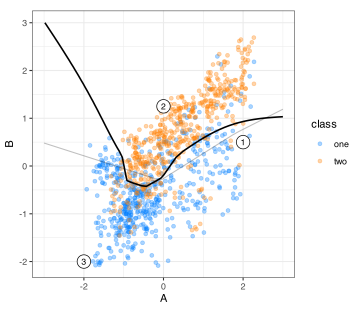
To examine attention in action, let’s focus on the three landmarks shown in the figure. For these specific data points, how does attention blend their initial embeddings? Recall that the attention weights for each data point are the p\times p matrix \boldsymbol{A}_i. Table 18.2 shows the matrix’s values for locations i = 1, 2, 3. The columns represent the incoming dimension, and the rows represent the outgoing values. To try to avoid confusion, the updated versions of the embeddings are blended into A_j.
| Updated |
Location 1
|
Location 2
|
Location 3
|
|||||||||||
|---|---|---|---|---|---|---|---|---|---|---|---|---|---|---|
| H_1 | H_2 | H_3 | H_4 | H_1 | H_2 | H_3 | H_4 | H_1 | H_2 | H_3 | H_4 | |||
| A_1 | 0.29 | 0.13 | 0.28 | 0.30 | 0.23 | 0.24 | 0.22 | 0.31 | 0.45 | 0.08 | 0.42 | 0.05 | ||
| A_2 | 0.04 | 0.88 | 0.04 | 0.03 | 0.22 | 0.24 | 0.22 | 0.32 | 0.27 | 0.23 | 0.27 | 0.22 | ||
| A_3 | 0.28 | 0.17 | 0.27 | 0.28 | 0.24 | 0.24 | 0.23 | 0.29 | 0.45 | 0.08 | 0.42 | 0.05 | ||
| A_4 | 0.29 | 0.12 | 0.28 | 0.31 | 0.18 | 0.21 | 0.17 | 0.43 | 0.22 | 0.27 | 0.22 | 0.29 | ||
The results were:
For the first location, the second updated value (A_2) is dominated by H_2. The other updated values are a nearly uniform mix of the previous embeddings.
At location two, all of the updated values are fairly even mixtures of the original values, although H_4 appears to have slightly more influence than the others.
The third location has two patterns. A_1 and A_3 are mostly equal blends of H_1 and H_2. Also, A_2 and A_4 are equal blends across their four antecedents.
The point of this table is to show how attention “recontextualizes” the global embedding values (i.e., the incoming hidden units) and adapts them on a per-sample basis. To understand this more globally, Figure 18.14 shows this adjustment across the entire predictor space. The final class boundary and the three locations are shown for reference. The colored heatmap values are the final attention weights (after the weighted softmax operation).
When reading this visualization, the values in the contour plots along each row will sum to 1.0 at each location. A few of the patterns show that the hidden units affect the updated versions, including the cells (H_1, A_1), (H_2, A_2), and (H_4, A_4). Other hidden units have a broad influence on the new embeddings in large regions of the predictor space (e.g., (H_4, A_4)).
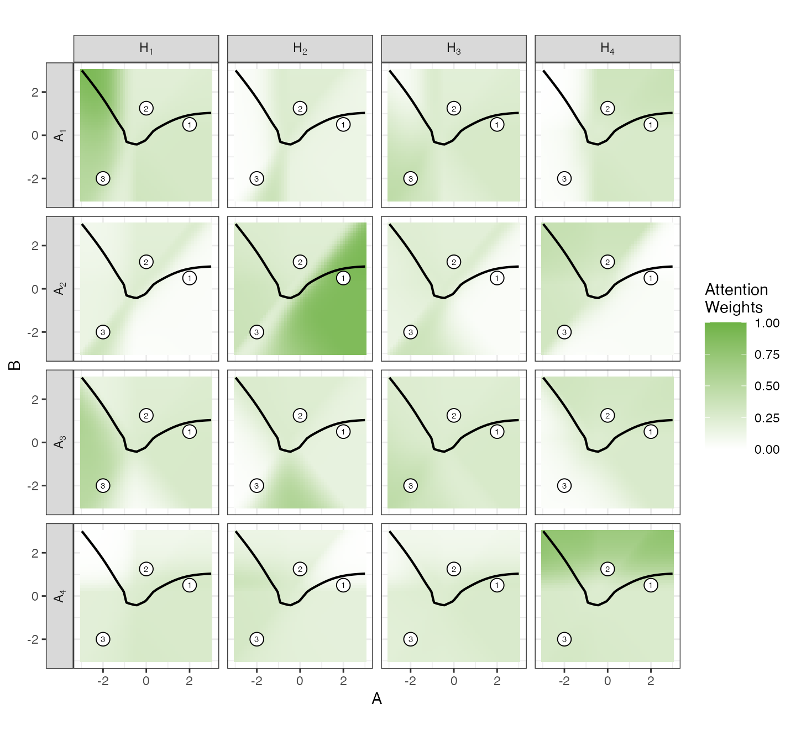
Now that we’ve seen how the attention weights have influenced the blending of the embeddings, let’s also remember that the attention process produces new embeddings that blend the A_j with learnable parameters. Recall that this model used an outgoing embedding dimension of m=2. This number is unusually small but was chosen to simplify the results and make them easier to understand. Interestingly, there is a numerical consequence for using a two-dimensional embedding: Z_1 and Z_2 are redundant18. For this reason, we can visualize one of the embedding values to understand how they both work.
Let’s examine how the updated hidden units A_j affect Z_1. Figure 18.15 has heatmaps showing relationships across the space of the original predictors. The first updated embedding has a boundary (with zero values) that separates somewhat diagonal regions of the predictor space. A_2 has strong negative values in the lower right side of the predictor space, but its boundary substantially breaks that pattern when predictor A \le -1. The other two updated embeddings exhibit similar patterns to one another: mostly positive values in the regions where predictor B \ge 0, with a slight downward dip at the center of the predictor space. Also, the boundary for A_3 curves diagonally when predictor A \le -1.
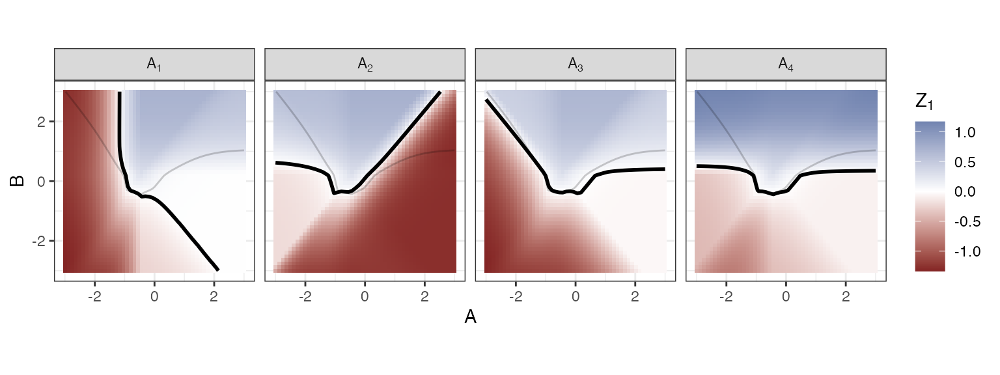
The final linear operation combines these patterns, and the softmax transformation is used to make the values probability-like. These values then define the final class boundary
Attention can be incredibly powerful. For column attention, we can estimate relationships between embeddings. However, what if the data requires more complex joint relationships and perhaps a few different joint representations? Our attention head can’t do multiple representations. In the next section, we’ll continue to focus on column attention but scale it up by creating multiple attention heads.
18.2.5 Multi-Head Attention
To improve attention, we can expand in two different directions. Multi-head attention (MHA) is when there are multiple attention mechanisms that run in parallel to one another. The idea is to estimate different higher-order representations by having parallel estimates. Let’s say that, in a data set, there were five underlying latent relationships that could be captured by attention. A single attention head would not be expressive enough to capture the patterns of multiple independent relationships. To increase the model’s capacity, we can increase the dimensionality of attention. At the end of MHA, we concatenate the \boldsymbol{Z} values produced by each attention head (per sample).
We can also increase capacity by using several multi-head attention components arranged in sequence. We could consider an attention block to be a set of operations that centers on attention (multi-head or not). This term is often used to include other operations such as batch normalization, linear operations to create an embedding dimension, and so on. As we’ll see with the SAINT model in the next section, it uses attention blocks with batch normalization, nonlinear activations, residual components, and both row and column attention.
Returning to column attention, AutoInt (Song et al. 2019) is a model that uses multi-head column attention. The model natively incorporates qualitative predictors (if any), so there is no need to preprocess them into binary indicators or perform other external encoding operations. AutoInt begins with an initial layer that projects each predictor into p_{emb} dimensions via a learned linear operation. For example, in the forestation data, there are 16 predictors, and one (county) is qualitative with 39 categories in the training set. If p_{emb} = 7, the embedding layer has 7(39 + 15) = 378 parameters and produces 16 embeddings of dimension 7, one per predictor.
These features are passed to a multi-head column attention process. It begins with another linear operation so that attention can have its own embedding dimension (per head). The outputs of the column-attention processes are concatenated together to produce a broader set of attended embeddings. After this, a residual skip layer is added to the embeddings, and nonlinear activation is applied.
Suppose that, for the forestation data, we specified seven initial embedding dimensions per predictor and used three attention blocks, each with two attention heads, each with an embedding size of 13. A summary of the AutoInt model, tracking the output feature dimensions and the number of learned parameters at each stage, would be:
- Embedding layer that outputs 16 sets of 7-dimensional embeddings:
- Categorical predictor: (39 × 7) embedding vectors using 273 parameters
- Numeric predictors: (15 × 7) embedding vectors using 105 parameters
- Embedding parameters: 378
- Column self-attention: 3 blocks, 2 heads of dimension 13, block output dimension (2 heads × 13 dimensions = 26)
- Block 1: input dimension 7 to output dimension 26, yielding output shape (16 × 26)
- QKV projections: (3 × (2 × 7 × 13)) = 546 parameters
- Residual projection: 7 to 26 with (7 × 26 = 182) parameters
- Add residual
- ReLU activation
- Block parameters: 728
- Block 2: input dimension 26 to output dimension 26 with output shape (16 × 26)
- QKV projections: (3 × (2 × 26 × 13)) = 2,028 parameters
- Residual projection 26 to 26: (26 × 26) = 676 parameters
- Add residual
- ReLU activation
- Block parameters: 2,704
- Block 3: input dimension 26 to 26 with output shape (16 × 26)
- Same as Block 2
- Block parameters: 2,704
- Flatten: (16 × 26) = 416 values
- Block 1: input dimension 7 to output dimension 26, yielding output shape (16 × 26)
- Output head output shape is C = 2
- Linear operation projecting the 416 dimensions of the required C = 2. This uses 416 × 2 + 2 = 834 parameters (including 2 bias terms)
- Softmax
In total, there are 7,348 learned parameters.
There are numerous tuning parameters related to the architecture, primarily the embedding sizes and the number of attention iterations. An AutoInt model was tuned over 25 unique candidate values for the following tuning parameters:
- Initial embedding dimension from 5 to 50.
- Dropout rate for initial embedding from 0.05 to 0.5.
- Attention embedding size from 2 to 50.
- Number of attention heads from 1 to 8.
- Number of attention blocks from 1 to 6.
- Dropout rate for attention parameters from 0.05 to 0.5.
- Learning rate from 10-2 to 10-0.1.
- Rate schedules of Cyclic, Decay (Expo), None, and Step.
- Momentum from 0.5 to 0.99.
- Batch size from 16 to 512.
The models were trained for up to 50 epochs of stochastic gradient descent, with early stopping after 10 consecutive poor results.
The results are shown in Figure 18.16 where two other statistics, the average number of training epochs and the number of model parameters, are also included. There is a significant amount of noise in these results, yielding few definitive trends. This is probably due to optimization issues. We can see from the mean number of epochs that models that stopped SGD earlier did worse than others. This suggests that the training process did not go well, perhaps due to poor initialization or a combination of suboptimal tuning parameters (such as a high learning rate combined with high momentum). We don’t see a trend between performance and the number of model parameters in these results.
There is some indication that six or more attention heads are useful, but the data appear to favor fewer attention blocks. There is a noisy trend in the learning rate that, somewhat surprisingly, performs better at lower rates. Also, smaller batch sizes do better than larger ones (on average).
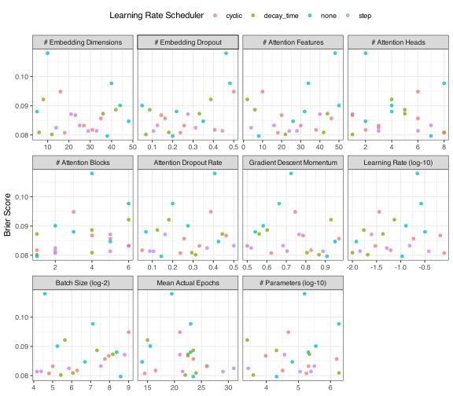
The best results corresponded to a model using 38 dimensions for its initial embedding with a dropout rate of 0.2. For attention, 1 blocks, each with 7 and a dimension of 7, were best and had an associated dropout rate of 0.14. The best learning rate was 10-0.97 with a none schedule. The batch size was 383 samples and the best momentum value was 0.91. The estimated Brier score for this configuration was 0.0796, which is competitive but does not beat the current best model.
Now we’ll consider how attention operates on our other data dimension.
18.2.6 Row-wise Attention
Row attention, also called intersample attention, follows the same logic as column attention but in the other direction. It tries to address the question of
Which other rows are most similar to me, and how should they influence my representation?
As we’ll see, much of what was said previously about attention above also applies. There are some additional aspects to ponder that will be addressed in this section. We would usually place this operation in a network after any initial embedding operations and before the hidden-unit layers. Shortly, we’ll discuss how a specific model, SAINT, uses row attention.
Recall that with column attention:
- The data available during training is the current mini-batch of data.
- Attention is computed per-feature and is across samples.
The first bullet point does not change. However, by transposing the attention dimension to rows, we will compute per-sample and across features. We won’t belabor the mathematics of row attention because, even though the unit of computation is different, the math is basically the same.
In some ways, row attention might be more understandable than column attention. Let’s once again illustrate how it works with a low-dimensional example.
Let’s create a fourth landmark location in the data from Figure 18.13 and combine it with a random sample of 7 data points to simulate a batch of eight. To keep things simple, we’ll use the original predictors without any initial dimension-expanding embedding operation. We can compute scaled dot-product attention for each sample across the two features. This produces an (8 × 8) matrix of attention weights. If we were interested in how much each of the 8 samples in the batch attends to the landmark, Figure 18.17 shows the results. This batch has locations that tended to be larger than the mainstream of the data for predictor B. One sample at roughly (2.3, 2.7) was in approximately the same direction as the landmark (i.e., angle) and fairly far away19. This value accounted for 68.9% of the new attended value, shown as the red square. The landmark attended itself with a percentage of 8.5%. We can see that the attended value is pulled along the upper diagonal of the predictor space.
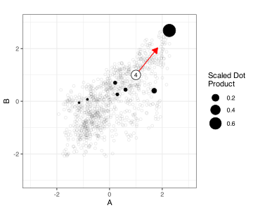
What happens at prediction time? After model training, how does row attention work? Consistent with previous discussions, the sample(s) being predicted undergo row attention. If a single data point is predicted, that value alone attends to itself. If multiple rows are predicted simultaneously, they attend to one another (as they would have during training if they were in the same batch). This means that the predicted values change if the prediction is on a different collection of samples. Despite this fact, there is a belief that predictions are generally improved by row attention.
One could also envision other prediction-time strategies. First, we could find the K nearest neighbors of the new sample to be predicted and pass them along with it. In that way, similar samples from the training set can attend to one another. This could be made somewhat efficient by precomputing the appropriate embeddings for the training set, making nearest-neighbor search the primary computational cost. Another option, seen in the next section, is to pass the entire training set along with the new sample and use it to attend. This is a good option for a pre-trained foundational model. See Kossen et al. (2021), Gorishniy et al. (2024), and the discussion in Section 18.3 for strategies to use row attention for in context learning.
As an example, the SAINT (Self-Attention and Inter-sample Attention Transformer) model from Somepalli et al. (2021) uses both column and row attention in its architecture.
Apart from the target token, SAINT takes a different approach to the initial embedding than AutoInt. SAINT produces the same number of embeddings for both categorical and numeric predictors. For categorical columns, there is a linear embedding that connects each level of each categorical predictor to p_{emb} dimensions. Numeric predictors also generate p_{emb} dimensions, but these are produced by a single MLP layer. There is one other difference, the addition of a target token, that will be described below.
Next, it applied the SAINT block, which encompasses alternating attention applications. It begins with a column attention block with the following steps:
- Multi-head column attention
- Add a residual connection from the initial embedding results.
- Layer normalization
- A linear embedding operation
- A residual connection from Step 3
- Layer normalization
where layer normalization is a variant of batch normalization described in Ba, Kiros, and Hinton (2016).
After this block, an analogous row attention block takes the embeddings and applies the same process, but uses row attention for column attention in the first step.
The SAINT block can be repeated in sequence as many times as necessary. Optionally, additional hidden layers can be added to improve performance before passing the values to the final linear output layer (and softmax).
Returning to the initial embeddings, SAINT also adds a single “token” for the target value to the embedding (called a [cls] token in the paper). It adds a learnable value to the embedding vector. During column attention, every feature can attend to the target, and vice versa, so the target slot accumulates a contextual summary of the sample20. During row attention, inter-sample attention sees the embedding sequence (plus the added token), so the target slot also exchanges information across samples in the batch.
After the two attention blocks, the head reads only the final-layer embedding of the target token (at the first position) and passes it through the subsequent hidden layers and the output layer. From the paper:
“We take the contextual embeddings from SAINT and pass only the embedding corresponding to the [target token] through an MLP to obtain the final prediction.”
At prediction time, row attention affects all samples being predicted simultaneously.
Let’s look at the details of a Saint model with an initial embedding size of 10 and two repeats of the attention transformer.
- Embedding layer starts with:
- Categorical predictor: 29 country levels mapped to 10 embedding vectors using 390 parameters
- Numeric predictors: each of the 15 is embedded via an MLP block with layer sizes [1, 100, 10], using 18,150 parameters.
- Transformer: 2 identical blocks with 8 attention heads (column and row). The output dimension is 10 for each.
- Each Block: input dimension 10 to output dimension 26, yielding an output shape of 10
- Layer normalization (10 embeddings) using 20 parameters
- Column Attention using 5,130 parameters
- Layer normalization (10 embeddings) using 20 parameters
- MLP with 10 dimensions (1,290 params)
- Layer normalization using 170 embeddings (10 dimensions for each of 16 predictors plus the target token) using 340 parameters
- Row Attention using 348,330 parameters
- Layer normalization (170 embeddings) using 340 parameters
- MLP with 170 dimensions projecting to 10 dimensions (348,330 params)
- Each Block: input dimension 10 to output dimension 26, yielding an output shape of 10
- Hidden Layer ingests 10 and outputs 20 embeddings
- Linear operation followed by ReLU activation, with 220 parameters.
- Output head output shape is C = 2
- Linear operation from 20 to 2: 42 parameters (includes 2 bias terms)
- Softmax
In total, there are 1,426,412 learnable parameters.
A Saint model was tuned over 25 candidates. The parameter ranges were the same as in the previous AutoInt model, as was the type of attention: column-only, row-only, or both. The tuning results in Figure 18.18 where, similar to the AutoInt results, most potential patterns are drowned out by the noise. There were eight candidates whose training ended quickly on average, with very poor Brier scores21. These results detrimentally affected the visualization and were removed from the figure.
The use of a target token didn’t appear to improve performance appreciably, and there is no real trend in the number of attention heads and blocks. Across the candidates, the best conditions were 12 dimensions for its initial embedding. For attention, column attention was optimal with 2 blocks, each with 8 and a dimension of and had an associated dropout rate of 0.39. The optimization favored a learning rate of 10-1.17 with a cyclic schedule, a batch size of 287 samples and momentum of 0.69. This resulted in a Brier score of 0.0796 which, for the moment, has a slight edge over the other models for these data.
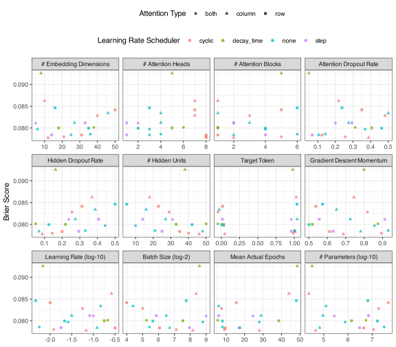
Now that we’ve described important concepts such as residual connections and attention, we’ll move on to the most innovative work in tabular machine learning over the last two decades.
18.3 Foundational Models
Foundational models are very large neural networks trained on an immense amount of training data. They are developed not for any one particular task but to create a broad understanding of a problem domain. Large language models are a good example; they are very proficient at understanding and reproducing human textual communication but were not designed for any one task (e.g., language translation). They can be applied, with some context, to help solve many different problems.
For tabular data, foundational models have been developed using large amounts of simulated data and are highly effective at prediction. We’ll focus on “prior fitted networks” (PFN) that emulate Bayesian inference using deep learning (Müller et al. 2021).
The models discussed in this section are pretrained. When we use them, no additional training or parameter estimation is required. We are applying a forward pass on a finalized model. The notion of the training set is different. Training has already occurred. However, the training data for our specific data set is crucial to set the context for the foundational model.
We’ll focus on two implementations of this type of foundational model: TabPFN (Grinsztajn et al. 2026) and TabICL (Qu et al. 2026). There is substantial engineering effort in both models, and TabPFN has been on a rapid development trajectory. TabPFN is also a proprietary model, and we don’t have all of the implementation details. For these reasons, some of the nuanced aspects of these models will be discussed here. We’ll focus on the general process of how those models are trained and how they perform. These results will also lead us to describe certain parts of the architectures to gain additional intuition.
Let’s start by discussing the general process for training a PFN.
18.3.1 Developing a Tabular Foundational Model
We’ve said that these models are trained on vast amounts of data. For the models under discussion here, all training data are simulated. Existing, real data sets, such as those found on the UCI Machine Learning Database, are not used for training. That’s where the “prior” in PFN comes in. We’ll discuss the nature of the simulated data sets in the next section, followed by the model structure. For now, let’s assume we have generated a large number of distinct data sets and want to train our model.
The general idea for this training regimen starts with Müller et al. (2021). They determined that if a sufficiently advanced neural network was trained on sufficient relevant data, it could produce results that approximate the posterior of a Bayesian model. They went about showing this using Gaussian Process models. In their case, classification models were optimized using cross-entropy (e.g., multinomial negative log-likelihood), and they showed a theoretical justification for this choice.
A more concrete example comes from Appendix E.1 of the Qu et al. (2025), which describes the different phases of training the model. For example, during the first 160K optimization steps, they use a batch size of 4, with each batch containing 1,024 data points. After this, they use single batches of randomly sampled sizes in different phases. They also used the Adam optimizer, learning rate schedules, and so on.
Once the PFN model is trained and finalized, its parameters are retained, and we can push new samples through it. The key idea at this point is that in-context learning, primarily via attention mechanisms, makes it work. When predicting new samples, our training data is passed along with the new sample(s) being predicted. As previously discussed in Section 18.2.6, these data can influence the embeddings in ways that make predictions relevant to our specific data.
Let’s start by discussing how the artificial data sets can be generated for these models.
18.3.2 Data Generation
Our previous discussions on Bayesian estimation discussed that a prior distribution reflects our belief about what is possible for our model parameters before the data are observed. For example, in Section 16.2.5, we illustrated Bayesian inference for two parameters in a logistic regression model, using two Gaussian priors. Once the data are observed, the posterior distribution combines our prior belief with the observed data.
For prior-fitted networks, the priors define the characteristics of the data that the model can observe, not strictly the model parameters. This can include data dimensions (e.g., number of features, classes, samples), distributional characteristics (e.g., Gaussian, uniform), relationships among predictors (e.g., multicollinearity), and relationships with the outcome. For example, we might have a small probability that a predictor has extreme outliers or missing values.
One way that all of this can come together is to use a structural causal model (SCM). This is a directed graph that uses randomness to generate the data and relationships. We start with the general notation of a cause; these can be predictors, the outcome, latent (unobserved) features, and so on. One way to combine them is to use an MLP with random weights and biases generated from some distributional prior. Another method might be to randomly generate a tree-like structure of conditional statements.
Since TabICL is a completely open-source model, let’s walk through an example in which it generated a classification dataset containing 1,024 data points using a specific random seed.
Initially, some specific details about the simulated data are randomly determined. For our example:
- 594 of 1,024 data points are randomly assigned to training.
- A set of thirteen latent variables (Z_1 \ldots Z_{13}) will be used to generate the predictors and outcome.
- There will be three predictors: x_1 (numeric), x_2 (categorical with 7 categories), and x_3 (categorical but with 9 categories).
- Three classes for the outcome.
TabICL generated a random causal graph that contains nodes and directed edges. A node is not a single variable: it holds a matrix with one row per observation and latent columns.
Figure 18.19 shows an overview of the quantities being generated. The prior sampled a five-node graph but randomly assigned every observed column to Node N_2. This leaves three of the five (Nodes N_3, N_4, and N_5) with nothing downstream. Those were pruned and never evaluated. What remained were two nodes, N_1 feeding N_2. This realization of the graph is fairly simple for this model, but it does help illustrate how the process works.

The process begins when 1,024 random uniform values were generated, which were then transformed in Node N_1 by a randomly chosen function. The eight possible transformations were: multilayer perceptrons, ensembles of decision trees, nearest-neighbor discretization, linear maps, quadratic forms, Gaussian processes, soft cluster assignment, and products of two simpler functions. For this example, N_1 used a randomly constructed quadratic form:
\tilde{u}_i = 0.999 -0.801\,u_i -0.595\,u_i^2 As we’ll see, all subsequent simulated relationships were born from these rowwise values.
Node N_2 did the majority of the work for this realization. First, it selected another randomly chosen function22 to project \tilde{u}_i onto 13 latent variables. Here, a Gaussian process (with randomly generated coefficients) was chosen to create the projection. Being functions of a single random variable, the thirteen variables are not independent of each other, and none of them carries any information that the first number did not already have.
The 13 latent variables were then preprocessed (centering, scaling, etc.) and also rescaled with a randomly determined importance value to modulate their effect on the outcome column. After this, the mapping between latent variables and the observed data was generated:
- x_1 is to be created solely on Z_1.
- x_2 is a function of variables Z_2, \dots, Z_8.
- x_3 is a transformation of Z_9.
- The outcome is based on Z_{10} and Z_{11}.
- Z_{12} and Z_{13} will not used to generate any observed data.
For the numeric predictor, it was transformed using the method of Kumaraswamy (1980) using:
x_{i1} = 1 - \left(1 - t_i^{\,2.26}\right)^{0.362}
where t_i = \mathrm{clip}\!\left(\frac{Z_{i1} + 1.268}{2.45},\, 0,\, 1\right).
The other three observed variables are all categorical and computed using nearest-neighbor discretization. For each, the observed variable is created by randomly selecting C rows of the data to serve as prototypes for the C possible categories. From these, the other data are assigned to categories by finding their nearest prototype value.
For example, x_2 selects representative points for each category in seven-dimensional space while x_3 randomly selects prototypes from a single latent variable (Z_9).
Note that the system does not generate predictors and then manufacture a fixed functional relationship with the outcome. All variables in the data are simultaneously generated, and the supervised component is “baked in” from the start.
We can see the evolution of SCM simulated data sets for these foundational models in Section 4 and Appendix C of Hollmann et al. (2022), Appendix C of Qu et al. (2025), Appendix E of Qu et al. (2026), and most recently, Section 2.3 of Grinsztajn et al. (2026). Additionally, X. Zhang et al. (2026) contains a history of these data generation techniques and also proposes guiding principles for creating a data prior. Nagler (2023) also examines PFNs from a statistical perspective. For some time, the underlying functional relationship between the predictors/causes and the target was smooth (via MLP structures). den Breejen et al. (2024) showed that unsmooth functions, specifically tree- and rule-based relationships, can also improve the quality of the final models. Similar ideas were then adopted into TabPFN and TabICL.
Data-generating mechanisms can be created very quickly and do not require storage beyond the time they are used for training. The deep learning model takes these data sets as data points. Let’s say that our stochastic gradient descent optimizer uses a batch size of 64. That translates to 64 randomly generated data sets of different types and sizes. A good example comes from Hollmann et al. (2025) where they describe data sets with dimensional priors
- n_{tr} \sim U[L, 2,048] for some unknown lower limit L
- n_{val} = 128
- p \sim Beta(0.95, 8.0), a right-skewed distribution, and is scaled to be between 1 and 160.
Training proceeded over 2 million iterations, each with a batch size of 64 data sets. This means that 128 million synthetic data sets were used for training. Qu et al. (2026) reports that 82 million datasets were used to train the second version of TabICL.
We’ll discuss how these models can include non-informative or very weakly informative predictors in Section 18.3.5.
18.3.3 Model Structure and Training
What is the architecture of the pretrained model? This depends on the implementation. In this section, the details are driven by version 3 of TabPFN. While we probably have the least information about how this model was trained, most of the details below are based on inspecting the source code (circa July 2026)23. This means that some of our discussions about why the architecture is the way it is reflect our supposition about the author’s intent. In some cases, there is very little written on why things are done as they are. For the remainder of this section, our use of “TabPFN” should be assumed to be version 3, unless otherwise noted.
For a broader perspective on these models, see Biloš et al. (2026).
TabPFN has a few constants for parameters that could potentially change in the future. These are:
- The maximum number of classes: C_{max} = 10
- The default embedding dimension: p_{emb} = 128
- The standardized aggregation dimension: p_{agg} = 512
- The number of aggregation tokens: k = 4
- The number of distribution prototype vectors: p_{proto} = 128
These numbers will be used in the details below, but may change in future versions.
What is the structure of TabPFN’s network? Keeping to the same convention used above, here is a summary of the forestation data, the details of which are discussed in the subsequent sections:
- Preprocessing (no parameters):
- General preprocessing
- Each of the 16 columns is mean-imputed and standardized
- A completeness indicator column is computed alongside each feature.
- Output: two (16 × 2)-wide tables (values and indicators).
- Feature grouping (no parameters)
- Each cell is replaced by a circular-shifted group of g = 3 sibling columns, concatenated with their 3 indicators, giving 6 values per cell.
- Cell embedding layer maps each cell’s 6 values to a 128-dimensional vector:
- Linear operation from 6 to 128: 896 parameters
- Target-aware term: each training row’s class label is added to all of its column tokens via a 10 × 128 orthogonal embedding table, using 1,280 parameters
- Feature-distribution embedder: 3 identical induced-self-attention blocks (each time 2 stages). The output dimension is 128 per column.
- Each block, using 289,872 parameters:
- 128 learned prototype vectors (128 dimensions each) using 16,384 parameters
- Cross-attention Stage 1
- QKV projections: 65,536 parameters
- Query multiplier via MLP: 10,576 parameters
- GELU MLP with layer sizes [128, 256, 128] using 65,536 parameters
- 3-layer normalizations (128 dimensions) using 384 parameters
- Cross-attention Stage 2
- Feature-distribution embedder parameters: 869,616
- Each block, using 289,872 parameters:
- Column aggregator (cross-feature interaction): 4 learned aggregation tokens are prepended to each row’s 16 column tokens, giving a sequence of 20 tokens; 3 transformer blocks with 8 heads. The output shape is (4 × 128) per row.
- 4 aggregation tokens (128 dimensions each) using 512 parameters
- Rotary positional embedding frequencies (fixed, non-learnable): 8 values
- Output layer normalization (128 dimensions) using 128 parameters
- Each block, using 131,328 parameters:
- Self-attention QKV projections: 65,536 parameters
- GELU MLP with layer sizes [128, 256, 128] using 65,536 parameters
- 2-layer normalizations (128 dimensions) using 256 parameters
- Column aggregator parameters: 394,632
- Flatten to the ICL dimension (no parameters): the 4 pooling vectors are concatenated into a per-row embedding of dimension k = 4 × 128 = 512.
- In-context (ICL) target encoder: each training row’s class label is added to its pooled token via a 10 × 512 orthogonal embedding table, using 5,120 parameters.
- ICL transformer: 24 identical blocks with 8 attention heads (head dimension 64), where test rows attend to training rows only. The output dimension is 512 for each row.
- Each block, using 2,139,904 parameters:
- Cross-attention QKV projections: 1,048,576 parameters
- Query-scaling MLP using 41,728 parameters
- GELU MLP with layer sizes [512, 1024, 512] using 1,048,576 parameters
- 2-layer normalizations (512 dimensions) using 1,024 parameters
- ICL transformer parameters: 51,357,696
- Followed by an output layer normalization (512 dimensions) using 512 parameters
- Each block, using 2,139,904 parameters:
- Output head output shape is n_{te} \times C
- Many-class retrieval decoder with head dimension 64 and 6 heads:
- Query projection (test embeddings, 512 to 384): 196,992 parameters
- Key projection (train embeddings, 512 to 384): 196,992 parameters
- Initial class probability estimates.
- Logit transformation
- Softmax
- Output head parameters: 393,984
- Many-class retrieval decoder with head dimension 64 and 6 heads:
In total, there are 53,023,736 learned parameters that have already been estimated. This count is the same regardless of the number of predictors, the number of categorical levels, or the number of classes (as long as C \le C_{max}).
18.3.3.1 Initial Internal Preprocessing
There are a variety of ways that TabPFN preprocesses data. The specific depends on how many estimators are used (see Section 18.3.6).
For a single model estimator, the preprocessing can include:
- For numeric predictors, center by the median and scale by the interquartile range. Also, it truncates values beyond \pm 3 to $ pm 3$.
- It computes a PCA-like linear embedding across the predictors and retains a small number of the resulting components, which is a function of the number of predictors and training set samples.
When two or more estimators are used, the preprocessing is deterministic but designed to induce variation in the data to maximize the ensemble’s effect. For example, instead of using a robust centering/scaling approach, the numeric predictors can be coerced to a uniform distribution (not unlike the ordered quantile normalization from Section 5.2).
Subsequentially, each entry of the predictor table is conceptualized as a cell. Every value is transformed into a two-element vector containing the predictor value and an integer indicating its completeness:
- 0 for finite and observed values
- -2 when data are missing
- +2 for positive infinity
- +4 for negative infinity
In other words, we begin with n rows and p columns, and each cell is represented as a two-dimensional vector.
Next, every non-finite value (i.e., missing and \pminfinite) is mean-imputed using the column means of the complete (finite) values from the training set. Only the predictor values are altered; the completeness integers are never imputed or rescaled.
Finally, a centering-and-scaling step is applied using statistics from the imputed training set. Because the imputation mean equals the complete-case column mean, it is subtracted back out during centering, so every value that was originally missing or infinite ends up encoded as (approximately) zero.
18.3.3.2 Feature Groupings
TabPFN reorganizes the cells into groups whose values are reused across neighboring columns. Our data stays n \times p, but each cell, previously two numbers (value + completeness indicator), now packs together g = 3 of the original cells for a total of six numbers. Here, g is the number of features per group and defaults to 3; there are p groups, one anchored at each column.
To define each group, a circular shift gathers neighboring columns: for a given column, it collects the values a fixed number of positions to the right, wrapping around the last column(s) back to the first. The offsets are 2^i for i = 0, 1, 2, i.e., 1, 2, and 4 positions. Illustrating the shift on predictors A, B, C, D, E:
- shift 1:
B,C,D,E,A - shift 2:
C,D,E,A,B - shift 4:
E,A,B,C,D
These three shifted copies are stacked to form the groups. Take predictor C in column 3: its group becomes (D, E, B). Positionally, column 3 is still C’s cell, and it now carries C’s neighbors. However, literally, it does not contain C’s values24. C’s own value is reused in the groups of three other columns (1, 2, and 4).
With many columns, the grouped neighbors are genuinely nearby columns. This can be very effective when the columns have a natural sequential or spatial ordering. For example, recall that the barley predictors in Section 7.1 represented 550 consecutive wavelengths in a spectrum. For this type of data, this additional column-neighborhood data can be very effective.
Either way, the point is the same: each cell is pre-loaded with a little local cross-feature context, so when attention and later operations run, every element already carries some information about its potential neighbors.
18.3.3.3 Initial Cell and Target Embeddings
After grouping, a linear operation created an embedding via
\boldsymbol{H}_{ij} = \boldsymbol{W}_{emb}\, \boldsymbol{x}_{ij} + \boldsymbol{b}_{emb}.
where \boldsymbol{W}_{emb} is (128 × 6) and there are 128 bias terms. Note that this process is a linear projection from 6 columns to p_{emb} = 128. Both the predictor’s values and completeness indicators are blended in this projection; there is no separate indicator channel from this point on.
The influence of the target classes is added to the cell embedding, but only for the training data.
Each outcome class is represented by a pre-learned 128-dimensional vector. These vectors are initialized to be orthonormal25, which keeps the classes maximally distinguishable at the start of training; they are then learned during pretraining. TabPFN has a hard limit on the number of classes, C_{max}, and creates a table \boldsymbol{Y}_{emb} of size C_{max} \times 128.
For the training data, the appropriate row of \boldsymbol{Y}_{emb} is added to each cell embedding in that row (the same vector across all p columns), nudging them toward the class associated with that row. The test data are kept as-is.
18.3.3.4 Feature-Distribution Embedding
Before proceeding, recall that each cell in our n \times p array is now a 128-dimensional vector/ From this point on, we’ll refer to a single column as a feature.
The feature-distribution embedder serves several purposes. First, it makes the model robust to arbitrary distributions in the current dataset. Because these foundation models are pretrained on a large number of synthetic datasets with widely varying distributions, the frozen model must represent a value by where it sits in its feature’s distribution rather than by its raw magnitude. This achieves a normalization-like invariance. However, unlike the fixed centering/scaling used in preprocessing, it is achieved through a learned, nonlinear mechanism whose parameters were tuned during pretraining precisely because this improved predictions.
Second, this process will use a version of row attention. This produces a learned co-representation for a single feature at a time. Each row’s embedding is re-expressed as a learned function of the other rows in its column. The model will eventually have to compare rows from the training set to rows from the test set. This sets up an apples-to-apples comparison between the two that will occur during the in-context learning portion of the model.
The attention process used here is a little different from the one described in Section 18.2.3. We previously focused on self-attention. In our current situation, cross-attention uses one data source for the queries and another for the keys and values.
The cross-attention block has many moving parts, and we’ll see its pattern applied repeatedly later in the network. Before we get deep into the minutiae, let’s illustrate the primary computations using an extremely simplified scenario. For example, the real process has many supervised components and a high dimensionality (128). The example shown below is unsupervised and in two raw dimensions. This will give us a sense of what this part of the network is doing without getting buried in details. This illustration won’t have perfect fidelity to the actual process, but it will demonstrate the goal of cross-attention. We’ll follow this with a description of the complete process.
The current TabPFN model uses three attention blocks for its feature-distribution embedding. Each cross-attention block contains two stages:
- Stage 1, where prototype points attend to training rows.
- Stage 2, where all rows attend to the prototype points.
Stage 1 has its own pretrained set of learned query inputs, denoted as \boldsymbol{P}, that is 128 × 128. These 128 rows are prototype vectors26, sometimes called “inducing points.” Prototypes in machine learning are vectors chosen or estimated to represent a distribution (Hastie, Tibshirani, and Friedman 2017, chapt. 13). These can be data points selected from a sample or estimated. We’ve seen a primative version of this in Section 7.4 where the centroids of a multivariate distribution for each class could be used as supplementary features. K-means clustering (Steinley 2006), learned vector quantization (Kohonen 1995), and mixture discriminant analysis (Hastie and Tibshirani 1996) are more conventional methods that use multiple vectors to represent a more general distribution. The values in \boldsymbol{P} are used as the query data for attention, while our embeddings serve as the keys and values (as we’ll see shortly). Since there are three attention blocks, there are distinct \boldsymbol{P} matrices for each.
Both stages use row attention. Within a single feature (column), the rows attend to one another. This is done indirectly here by having the prototype points \boldsymbol{P} attend to the training rows’ embeddings for that feature. Our first action is to use cross-attention with the n_{tr} training points. This produces an array of size n_{prot} \times p_{emb} (128 × 128) containing the attended prototype vectors. There is one vector per prototype, each a weighted average of the training rows’ embeddings for that feature, with weights reflecting how strongly each training row matched that prototype. We’ll label the results as \boldsymbol{H}_{prot}, and they can be thought of as distributional reference values.
Figure 18.20 shows a simplified low-dimensional example. The left panel shows the training set from Figure 18.4, along with 16 prototype points27 in red and a single test point in black. These computations are simplified by omitting the initial embedding process, setting the attention matrices to the identity matrix (such as \boldsymbol{W}^{q} = \boldsymbol{I}, etc.), and omitting a few ancillary steps.
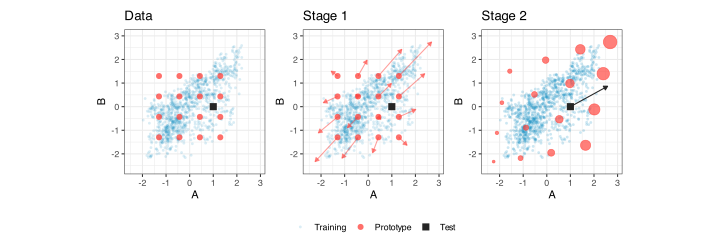
The middle panel shows how cross-attention uses the training-set points to shift the 16 prototype points to \boldsymbol{H}_{prot}. The result is that the points emulate the correlation structure of the original data, albeit with larger variances. The prototype values occupy a space larger than the training data mainstream.
The second stage of cross-attention uses all data (train and test) as queries, with \boldsymbol{H}_{prot} as keys and values. The resulting attended values are also combined with their original values via a residual connection.
The right panel shows that the single test sample was shifted toward the upper-right of the distribution. The variable-sized red points indicate the attended prototype vectors, and their sizes reflect the extent to which the test sample attended to each reference point28. While not shown, the training set maintains its shape but with a wider distribution than before.
The literature often describes operations like these as “distributionally aware.” Beyond the anthropomorphizing, this term doesn’t really describe what is occurring. The prototype points are learned during pretraining and function as prototype vectors. Prototypes are learned vectors that act as “stand-ins” for a larger dataset. Since \boldsymbol{P} is optimized by the objective function, it also serves as a prototype that carries some supervised information. In other words, these are the best prototypes that encourage predictive accuracy.
In this simplified version, the first stage of cross-attention coerced our prototypes’ distribution to resemble the observed data. It recontextualized the prototype points to our data.
The second stage does the same thing in reverse, using our observed data. It pulls our data to the more realistic prototypes. The blended values are added to the row’s own vector (the residual connection). This preserves the original information and adds more information about which prototypes it resembled and how strongly.
Now we will describe the actual process and all of its operations. The process starts by normalizing the prototype points and our observed features. TabPFN uses RMSnorm to do this. Later on, we’ll use some of the original values for a residual connection.
After normalization, our previously described first stage of cross-attention occurs. The prototype points and the attention parameter matrices have all been estimated during pretraining. Operationally, the attention process is split into 8 attention heads, each taking 16 features from the full collection of 128 and coupling them with their corresponding columns of the attention \boldsymbol{W} matrices. From this process, we have calculated the attention weights for the prototype points.
However, the model takes an extra step to alter the attention weights. The concern is that the row-wise softmax operation, which coerces the attention weights to sum to 1, can lose focus when the training set is large. A multiplier for the queries is computed from two different MLP submodels, and then softmax is used. After this, the row-wise weights are coerced to sum to 1, and the attended prototype points are computed. These are denoted as \boldsymbol{P}_a
The newly adjusted prototype points \boldsymbol{P}_a are then combined with a residual connection to their values (pre-normalization), producing \boldsymbol{P}_r. These values are then used in an MLP that first re-normalizes them, then passes them through a hidden layer with 256 units and GELU activation (see Figure 18.3). The resulting features are then added back to \boldsymbol{P}_r to produce our new prototypes previously labeled as \boldsymbol{H}_{prot}. Thus concludes the first stage of cross-attention.
The second stage is the same as the first except that:
- The combined training and test data serve as queries.
- \boldsymbol{H}_{prot} plas the roles of keys and values.
- There is no extra multiplier to improve the softmax due to the smaller number of rows (128) due to the role changes.
This two-stage process repeats in each of the three blocks, with each block’s output feeding the next.
18.3.3.5 Column Aggregator
The two primary goals of the column aggregator module are:
- Enact columnar self-attention to add more model capacity.
- Regardless of the original dimensions of the data, pool/flatten the data to a smaller but standardized dimension.
The second point is interesting. In our data, the number of columns p will vary across datasets. However, the foundational model has been trained with specific fixed dimensions. This part of the network is here to rectify this discontinuity.
Data-wise, let’s look at where we currently are. Coming into this module, our embedding data are still n \times p where each cell in that array is a 128-dimensional vector. For each row, the embedding data are
\boldsymbol{E}_i = \bigl[\boldsymbol{e}_{i1}, \dots, \boldsymbol{e}_{ip} \bigr] \quad (p \times p_{emb})
where each \boldsymbol{e} is a vector of size p_{emb} = 128.
The column aggregator will now augment that data structure with some pretrained values that we’ll call aggregation tokens29 and denote them as \boldsymbol{t}. For TabPFN version 3, there are k = 4 tokens, each with a pretrained vector of p_{emb} = 128 learned parameter estimates. Now, for a given row, we have
\boldsymbol{E}_i^+ = \bigl[\, \underbrace{\boldsymbol{t}_1, \dots, \boldsymbol{t}_4}_{k \text{ aggregation tokens}},\ \underbrace{\boldsymbol{e}_{i1}, \dots, \boldsymbol{e}_{ip}}_{p \text{ embedding tokens}} \,\bigr] \quad ((p + p_{agg}) \times p_{emb}).
The same values are prepended to each row. These columns will come into play during the attention process in this block. They are designed to help summarize features within a row of data in order to reduce and standardize the feature dimension. They are not unlike the prototype vectors in the previous block. The aggregation tokens are designed to help aggregate the current data more effectively.
On its own, attention treats a row’s columns as an unordered set: permute the columns and the outputs simply permute along with them, so two columns with similar embeddings are indistinguishable. To give each column a stable identity, the attention in this module applies rotary positional embeddings, called RoPE (Su et al. 2024). Every query and key vector is rotated by a fixed angle proportional to its column position, so the attention score between two tokens depends on their relative column distance. This matters because the model has no per-feature parameters. The same pretrained weights process every feature of every dataset, so position is the only “address” available for telling one column from another. RoPE adds no learned parameters and depends only on relative position, so it works for any number of columns.
The primary operation in this module is a sequence of three column attention blocks. The first two are identical and very similar to previous discussions. The third is a bit different.
The two traditional attention blocks have a straightforward set of steps:
- Normalize the augmented data (RMSNorm, in this case)
- Column-based self-attention using 8 heads with 16 features each (as before)
- Add a residual connection to the augmented data (pre-normalization)
- RMSNorm
- A standard MLP architecture with a layer containing 256 units and GELU activation.
- Another residual connection to the data produced by Step 3.
The final block uses columnar cross-attention, in which the queries are the 4 aggregation-token positions of the sequence as it stands after the two self-attention blocks. By this point, the aggregation tokens have already absorbed information from the feature columns, so these are updated vectors rather than the original pretrained \boldsymbol{t}_1, \dots, \boldsymbol{t}_4. The keys and values are the entire processed sequence (all p + p_{agg} token positions).
This final block is not bare attention; it has the same internal structure as the previous two. The cross-attention output is added to the aggregation tokens through a residual connection, followed by the usual MLP sub-layer: RMSNorm, an MLP with one hidden layer of 256 units (128 to 256 to 128) with GELU activation, and a second residual connection. After this, one final RMSNorm is applied to the reduced set of p_{agg} vectors.
Prior to this point, the number of tokens per row has been specific to the data set. After cross-attention, we have a smaller standard dimension. Now our data are p_{agg} \times p_{emb} = 512, and each cell still contains 128-dimensional vectors. The last step is to flatten the data within each row into a single vector of p_{agg} = 512 scalars.
18.3.3.6 In-Context Learning Blocks
This block is the core of how this foundational model operates. Its process is very similar to past blocks, but the scale changes dramatically. It will apply 24 cross-attention blocks in sequence. These attention blocks will use:
- The combined training and test data as queries
- The training rows serve as keys and values.
This identifies the training rows that the test rows most resemble and reweights them accordingly.
Before the first ICL block is applied, the target information is injected a second time. Recall from Section Section 18.3.3.3 that each training row’s class vector (a row of the C_{max} \times 128 table \boldsymbol{Y}_{emb}) was added to its cell embeddings; that signal has since been pooled into each training row’s 512-dimensional summary by the column aggregator. A second, separate table of size C_{max} \times 512, denoted as \boldsymbol{Y}_{icl}, now re-asserts the outcome at the row level: the appropriate row of \boldsymbol{Y}_{icl} is added to each training row’s summary vector. Like \boldsymbol{Y}_{emb}, this table was initialized to be orthonormal and then learned during pretraining (it accounts for the 5,120 target-encoder parameters counted earlier). The test rows again receive nothing.
These label terms are what make the attention steps below informative. The test rows never carry target information themselves. Instead, when a test row attends to the training rows it most resembles, the content it retrieves includes those rows’ label terms; the label information flows from the training rows to the test rows through the attention weights.
The details of this cross-attention process most resemble the one shown in Section 18.3.3.4:
- RMSNorm is used for normalization of the 512 scalars.
- Row-wise cross-attention, with all rows as queries and the training rows as keys and values.
- Compute the query multiplier.
- Row-wise softmax to generate the attention weights.
- Compute the attended values.
- Use pretrained weights in a linear operation.
- Add a residual connection from the pre-normalized values.
- Apply RMSNorm to the result.
- Apply an MLP with one hidden layer of 1,024 units and GELU activation.
- Add a second residual connection from the values produced in step 7.
Since we previously reduced the embedding dimension to a static value of 512, the 8 attention heads use a subset size of 64. As before, the outputs of these 8 heads are concatenated before step 5 is applied.
After 24 iterations of cross-attention, RMSNorm is applied to the results.
The output of this ICL block is the arrays of training and test values. These are sent to the next block to produce the class probabilities for our unknown samples.
18.3.3.7 Output Head
At this point, we are ready to translate our embeddings to class probability estimates for the test samples. For a more conventional model, we would linearly project the embeddings into C columns and then apply softmax to obtain probability-like outputs.
Although the ICL process has indirectly used our target embeddings (via the training rows), we’ll use cross-attention again to solve the problem.
TabPFN uses separate linear operations with different pretrained weights to transform the n_{te} rows and the n_{tr} rows from 512 to 384 dimensions. Cross-attention is applied in a new way:
- The n_{te} test rows serve as the queries
- The n_{tr} training rows are the keys.
- The values are a matrix of binary indicators generated from a one-hot encoding of the training outcome column, assuming that there are C_{max} class levels.
This time, there are 6 attention heads, each using 64 separate columns.
Since the values are binary and attention produces a weighted average of them, we can view the attended values as probability estimates (Nadaraya 1964; Watson 1964; Wang and Sabuncu 2022). These are produced for each head, and an overall average of the probability estimates is used for each row. At this point, we have an array of n_{te} \times C_{max} probability estimates. However, if our data has fewer than C_{max} classes, all indicators for the extra classes have zero entries in every row of the value matrix. These produce probability estimates of absolute zero and can be discarded.
The remaining initial estimates are converted to be log-probabilities
\eta_{ic} \;=\; \log\bigl(\max(\hat{p}_{ic}, \epsilon) + 3\epsilon\bigr).
where \epsilon = 10^{-5} is used to avoid log(0). A final softmax estimate is used to produce the final class probability estimates.
18.3.4 In Context Learning Rate
To better understand, the training set was sampled in various sizes, and these data were used to initialize the model. To measure performance, out-of-sample predictions were generated30, and the Brier score and the area under the ROC curve were computed. This was repeated 25 times, and the random numbers used to sample the training set were standardized so that both implementations used the same data in each replicate.
Figure 18.21 shows how the metrics changed over data size. The 0.05, 0.50, and 0.95 quantiles of the replicate runs are reflected in the center line and shaded regions. We can see that performance on extremely small samples is at the no-information rate for each metric, with a high degree of replicate-to-replicate variation. As data size increases, performance improves, and variation shrinks considerably. The trajectories of both metrics appear to improve only marginally with larger sample sizes, suggesting that additional data might yield only slight improvements.
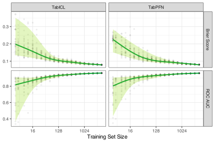
It’s also interesting to select a few out-of-sample data points to see how individual predictions vary with initialization size. Figure 18.22 shows these patterns for both models with six different samples. The first two samples converge to very small probability estimates. The first oscillates between the extremes, quickly moving back and forth between very high and very low probability estimates. The second sample is drastically different. It decreases progressively but remains fairly consistent after about 100 samples. The other samples show similar patterns. Samples four and five exhibit moderate variation over sample size, while samples three and six move dynamically over data size.
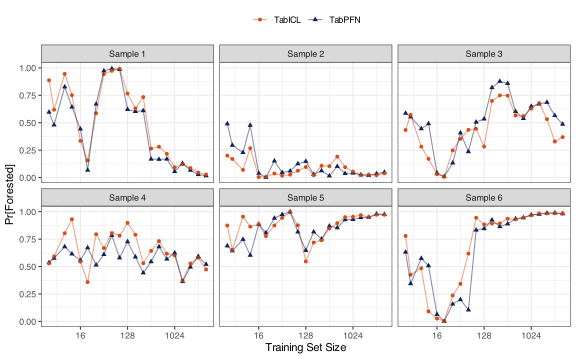
One remarkable aspect of this visualization is that both implementations exhibit highly similar patterns across almost every sample. The random numbers were fixed so that, for each replicate and sample size, both models used the same data. Given this, the patterns for the two independent implementations follow each other over sample sizes. The correlations were computed for each sample, and these ranged from 0.56 to 0.97.
18.3.5 Resistance to Irrelevant Predictors
Recall that, for simpler MLP models, Section 18.1.4 emphasized the need to remove irrelevant predictors from the training. A simulation study was presented in Section 13.1, in which the performance of MLP models fell by about 40% when multiple noise columns were present in the data.
Interestingly, two other neural network models are shown in Figure 13.1: TabNet and TabPFN. TabNet is a tabular deep learning model that “uses sequential attention to choose which features to reason from at each decision step.” This happens separately for each row in the data. “Feature selection” generally refers to removing original predictors from a model to make it more parsimonious and improve performance by eliminating extraneous predictors. TabNet’s procedure is more akin to embedding selection, since it occurs midway through the network and cannot make the prediction process functionally independent of the original predictors. We can see from Figure 13.1 that TabNet also suffers when noise columns are added to the training data.
TabPFN (versions 2 and 3), however, is not compromised in the same way. The reason is somewhat unclear since none of the traditional mechanisms for supervised feature selection are incorporated into the model. We can postulate a few reasons why this might be the case.
One idea is that the algorithm used to generate the simulated training data biases the final model towards a sparser feature set. In Hollmann et al. (2025), they note that
“Disjoint subgraphs lead to features that are marginally independent of the target if they are not connected to the target node, reflecting real-world scenarios with uninformative predictors.”
They also show evidence of version 2’s resistance to irrelevant columns.
With a very large corpus of simulated data sets used to train the model, it is possible that adding a percentage of noisy (or barely supervised) features has imparted some degree of immunity to the model.
While not shown in Figure 13.1, TabICL also has resistance to uninformative predictors. Since this is an open-source model, we have more definitive information regarding how it was trained. The prior for the model’s supervised structure assigns 70% probability to an MLP-type equation and 30% to a tree-based structure. It also induces uninformative predictors by initializing weights to zero in blocks, thereby eliminating the effects of one or more predictors.
18.3.6 Ensembling
These foundational models are sensitive to data ordering. For example, one can generate different results if the order of the predictor columns or the class levels of the data (outcome or predictor) changes from run to run. This causes a slight increase in model variance. As we will discuss in Chapter 20 and ?sec-ensembles, one way to improve unstable models is to create multiple realizations of the model and then average their outputs to produce the final prediction. Bagging, boosting, and random forests are examples of this strategy.
In addition to using different data orders to induce variation, TabPFN preprocesses the data differently when multiple estimators are requested.
Once each row has multiple estimates under different configurations, the values are averaged to produce the final prediction.
How much do the predictions change over different data configurations? To assess this, we used the forestation data with reshuffled target-value orders and the levels of the sole qualitative predictor (county), trained a TabPFN model, and then predicted the data. This was performed twelve times. From here, we examined many randomly selected prediction replicates across ensemble sizes of 2 to 12. For each distinct row of the predicted data, we saved the individual probability estimates for each estimator and converted them into a logit format. Figure 18.23 shows a smoothing spline fit to logit’s standard deviation as a function of the mean, per ensemble size. There is no meaningful shift in variation as ensemble members are added; the curves for these data show significant overlap.
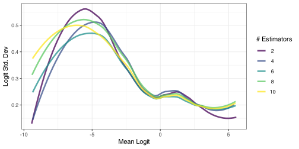
Ensembles thrive on propagating model variation via prediction replicates. This figure indicates that the multiple estimates do not significantly increase prediction diversity as new replicates are added. Therefore, adding multiple estimators may not help much, at least for this data set. We’ll also see in Section 18.3.7 that there is a weak signal in a very low-noise setting when adding estimators for both TabPFN and TabICL. There is a very small, measurable improvement, much smaller than we see when ensembling high-variance models (e.g., trees). However, this may not be the case for other data sets with more class levels and additional qualitative predictors.
18.3.7 Application to the Forstation Data
Both TabPFN and TabICL were used to predict the probability of forestation. Each was tuned over the number of estimators. Figure 18.24 shows that TabPFN performs better; it has a slight edge over TabICL, given the tight variation in the results. As we’ll see in the next section, they are practically equivalent. These results are also the best seen so far.
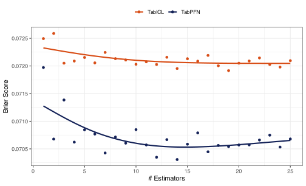
Also, there is a trend in the number of estimators. TabICL shows limited improvement after two estimators, and its best configuration results in a 0.8% improvement over a single estimator. TabPFN shows a greater difference but also demonstrates that adding more estimators does not monotonically improve the situation. Its best configuration is 2.3% better than a single value. Ensembling doesn’t seem to buy us much here, and that’s good news; the model variance is low even when we perturb the data ordering and preprocessing methods.
Let’s close the chapter by reassessing the leaderboard for our example data.
18.4 Comparisons to Previous Models
So far, the KNN and two-layer MLP models have performed best. We’ll replicate the previous Bayesian analysis to include more models: AutoInt, Saint, TabICL, and TabPFN. However, since the naive Bayes model performed so poorly, we’ll exclude it from further analysis. Figure 18.25 shows the results. AutoInt did slightly better than a basic two-layer MLP model. TabPFN pulled into the lead with KNN trailing behind with a probability of practical equivalence of about 74%. The probability of equivalence between TabPFN and TabICL was 98.5%, as expected.
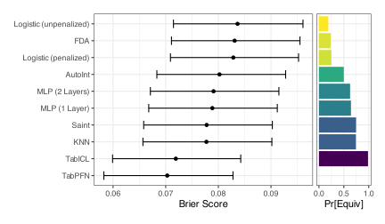
Chapter References
Achiam, J, S Adler, S Agarwal, L Ahmad, I Akkaya, F Leoni Aleman, D Almeida, et al. 2023. “GPT-4 Technical Report.” arXiv.
Ba, J, J Kiros, and G Hinton. 2016. “Layer Normalization.” arXiv Preprint arXiv:1607.06450.
Baldi, P, and K Hornik. 1989. “Neural Networks and Principal Component Analysis: Learning from Examples Without Local Minima.” Neural Networks 2 (1): 53–58.
Biloš, M, J Wilson, A Schneider, and Y Nevmyvaka. 2026. “A Mechanistic Study of Tabular Foundation Models.” arXiv Preprint arXiv:2605.21288.
Bishop, C, and H Bishop. 2023. Deep Learning: Foundations and Concepts. Springer Nature.
Boykis, V. 2023. “What Are Embeddings?” https://doi.org/10.5281/zenodo.8015028.
Clevert, DA, T Unterthiner, and S Hochreiter. 2015. “Fast and Accurate Deep Network Learning by Exponential Linear Units (Elus).” arXiv 4 (5): 11.
Dauphin, Y, R Pascanu, C Gulcehre, K Cho, S Ganguli, and Y Bengio. 2014. “Identifying and Attacking the Saddle Point Problem in High-Dimensional Non-Convex Optimization.” Advances in Neural Information Processing Systems 27.
Defazio, A, and S Jelassi. 2021. “Adaptivity Without Compromise: A Momentumized, Adaptive, Dual Averaged Gradient Method for Stochastic Optimization.” arXiv.
den Breejen, F, S Bae, S Cha, and SY Yun. 2024. “Fine-Tuned in-Context Learning Transformers Are Excellent Tabular Data Classifiers.” arXiv Preprint arXiv:2405.13396.
Devlin, J, MW Chang, K Lee, and K Toutanova. 2019. “Bert: Pre-Training of Deep Bidirectional Transformers for Language Understanding.” In Proceedings of the 2019 Conference of the North American Chapter of the Association for Computational Linguistics: Human Language Technologies, Volume 1, 4171–86.
Diederik, P, and J Ba. 2015. “A Method for Stochastic Optimization.” In International Conference on Learning Representations (ICLR). Vol. 5. 6. California;
Dozat, T. 2016. “Incorporating Nesterov Momentum into Adam.” In Proceedings of the 4th International Conference on Learning Representations, 1–4.
Duchi, J, E Hazan, and Y Singer. 2011. “Adaptive Subgradient Methods for Online Learning and Stochastic Optimization.” Journal of Machine Learning Research 12 (7).
Dugas, C, E Bengio, F Bélisle, C Nadeau, and R Garcia. 2000. “Incorporating Second-Order Functional Knowledge for Better Option Pricing.” Advances in Neural Information Processing Systems 13.
Elfwing, S, E Uchibe, and K Doya. 2018. “Sigmoid-Weighted Linear Units for Neural Network Function Approximation in Reinforcement Learning.” Neural Networks 107: 3–11.
Glorot, X, and Y Bengio. 2010. “Understanding the Difficulty of Training Deep Feedforward Neural Networks.” In Proceedings of the Thirteenth International Conference on Artificial Intelligence and Statistics, 249–56. JMLR Workshop; Conference Proceedings.
Glorot, X, A Bordes, and Y Bengio. 2011. “Deep Sparse Rectifier Neural Networks.” In Proceedings of the Fourteenth International Conference on Artificial Intelligence and Statistics, 315–23. JMLR Workshop; Conference Proceedings.
Goodfellow, I, Y Bengio, and A Courville. 2016. Deep Learning. MIT press.
Gorishniy, Y, I Rubachev, N Kartashev, D Shlenskii, A Kotelnikov, and A Babenko. 2024. “TabR: Tabular Deep Learning Meets Nearest Neighbors.” In International Conference on Learning Representations, 2024:18209–49.
Gorishniy, Y, I Rubachev, V Khrulkov, and A Babenko. 2021. “Revisiting Deep Learning Models for Tabular Data.” Advances in Neural Information Processing Systems 34: 18932–43.
Grinsztajn, L, K Flöge, O Key, F Birkel, P Jund, B Roof, M Manium, et al. 2026. “TabPFN-3: Technical Report.” arXiv Preprint arXiv:2605.13986.
Guo, C, and F Berkhahn. 2016. “Entity Embeddings of Categorical Variables.” arXiv.
Hanson, S, and L Pratt. 1988. “Comparing Biases for Minimal Network Construction with Back-Propagation.” Advances in Neural Information Processing Systems 1.
Hastie, T, and R Tibshirani. 1996. “Discriminant Analysis by Gaussian Mixtures.” Journal of the Royal Statistical Society Series B: Statistical Methodology 58 (1): 155–76.
Hastie, T, R Tibshirani, and J Friedman. 2017. The Elements of Statistical Learning: Data Mining, Inference and Prediction. Springer.
He, K, X Zhang, S Ren, and J Sun. 2015. “Delving Deep into Rectifiers: Surpassing Human-Level Performance on Imagenet Classification.” In Proceedings of the IEEE International Conference on Computer Vision, 1026–34.
He, K, X Zhang, S Ren, and J Sun. 2016. “Deep Residual Learning for Image Recognition.” In Proceedings of the IEEE Conference on Computer Vision and Pattern Recognition, 770–78.
Hendrycks, D, and K Gimpel. 2016. “Gaussian Error Linear Units (Gelus).” arXiv.
Hinton, G. 2012. “Neural Networks for Machine Learning, Lecture 6e.” https://www.cs.toronto.edu/~tijmen/csc321/slides/lecture_slides_lec6.pdf.
Hochreiter, S. 1998. “The Vanishing Gradient Problem During Learning Recurrent Neural Nets and Problem Solutions.” International Journal of Uncertainty, Fuzziness and Knowledge-Based Systems 6 (02): 107–16.
Hochreiter, S, and J Schmidhuber. 1997. “Long Short-Term Memory.” Neural Computation 9 (8): 1735–80.
Hoffer, E, I Hubara, and D Soudry. 2017. “Train Longer, Generalize Better: Closing the Generalization Gap in Large Batch Training of Neural Networks.” Advances in Neural Information Processing Systems 30.
Hollmann, N, S Müller, K Eggensperger, and F Hutter. 2022. “TabPFN: A Transformer That Solves Small Tabular Classification Problems in a Second.” arXiv Preprint arXiv:2207.01848.
Hollmann, N, S Müller, L Purucker, A Krishnakumar, M Körfer, S Hoo, R Schirrmeister, and F Hutter. 2025. “Accurate Predictions on Small Data with a Tabular Foundation Model.” Nature 637 (8045): 319–26.
Ioffe, S, and C Szegedy. 2015. “Batch Normalization: Accelerating Deep Network Training by Reducing Internal Covariate Shift.” In International Conference on Machine Learning, 448–56.
Keskar, NS, D Mudigere, J Nocedal, M Smelyanskiy, and PTP Tang. 2016. “On Large-Batch Training for Deep Learning: Generalization Gap and Sharp Minima.” arXiv.
Kingma, D, and J Ba. 2017. “Adam: A Method for Stochastic Optimization.” arXiv.
Kohonen, T. 1995. “Learning Vector Quantization.” In Self-Organizing Maps, 245–61. Springer.
Kossen, J, N Band, C Lyle, A Gomez, T Rainforth, and Y Gal. 2021. “Self-Attention Between Datapoints: Going Beyond Individual Input-Output Pairs in Deep Learning.” Advances in Neural Information Processing Systems 34: 28742–56.
Krogh, A, and J Hertz. 1991. “A Simple Weight Decay Can Improve Generalization.” Advances in Neural Information Processing Systems 4.
Kumaraswamy, P. 1980. “A Generalized Probability Density Function for Double-Bounded Random Processes.” Journal of Hydrology 46 (1-2): 79–88.
LeCun, Y, L Bottou, G B Orr, and KR Müller. 2002. “Efficient Backprop.” In Neural Networks: Tricks of the Trade, edited by G Montavon, G B Orr, and KR Müller, 9–50. Springer.
Li, H, Z Xu, G Taylor, C Studer, and T Goldstein. 2018. “Visualizing the Loss Landscape of Neural Nets.” Advances in Neural Information Processing Systems 31.
Loshchilov, I, and F Hutter. 2017. “Decoupled Weight Decay Regularization.” arXiv.
Lu, J. 2022. Gradient Descent, Stochastic Optimization, and Other Tales. Eliva Press.
Müller, S, N Hollmann, S Arango, J Grabocka, and F Hutter. 2021. “Transformers Can Do Bayesian Inference.” arXiv Preprint arXiv:2112.10510.
Nadaraya, E. 1964. “On Estimating Regression.” Theory of Probability & Its Applications 9 (1): 141–42.
Nagler, T. 2023. “Statistical Foundations of Prior-Data Fitted Networks.” In International Conference on Machine Learning, 25660–76. PMLR.
Peng, H, Y Yu, and S Yu. 2023. “Re-Thinking the Effectiveness of Batch Normalization and Beyond.” IEEE Transactions on Pattern Analysis and Machine Intelligence 46 (1): 465–78.
Qu, J, D Holzmuller, G Varoquaux, and M Morvan. 2025. “TabICL: A Tabular Foundation Model for in-Context Learning on Large Data.” arXiv Preprint arXiv:2502.05564.
Qu, J, D Holzmuller, G Varoquaux, and M Morvan. 2026. “TabICLv2: A Better, Faster, Scalable, and Open Tabular Foundation Model.” arXiv Preprint arXiv:2602.11139.
Santurkar, S, D Tsipras, A Ilyas, and A Madry. 2018. “How Does Batch Normalization Help Optimization?” Advances in Neural Information Processing Systems 31.
Smith, L. 2017. “Cyclical Learning Rates for Training Neural Networks.” In 2017 IEEE Winter Conference on Applications of Computer Vision (WACV), 464–72. IEEE.
Somepalli, G, M Goldblum, A Schwarzschild, B Bruss, and T Goldstein. 2021. “Saint: Improved Neural Networks for Tabular Data via Row Attention and Contrastive Pre-Training.” arXiv Preprint arXiv:2106.01342.
Song, W, C Shi, Z Xiao, Z Duan, Y Xu, M Zhang, and J Tang. 2019. “AutoInt: Automatic Feature Interaction Learning via Self-Attentive Neural Networks.” In Proceedings of the 28th ACM International Conference on Information and Knowledge Management, 1161–70.
Steinley, D. 2006. “K-Means Clustering: A Half-Century Synthesis.” British Journal of Mathematical and Statistical Psychology 59 (1): 1–34.
Su, J, M Ahmed, Y Lu, S Pan, W Bo, and Y Liu. 2024. “Roformer: Enhanced Transformer with Rotary Position Embedding.” Neurocomputing 568: 127063.
Sutskever, I, J Martens, G Dahl, and G Hinton. 2013. “On the Importance of Initialization and Momentum in Deep Learning.” In International Conference on Machine Learning, 1139–47. pmlr.
Vaswani, A, N Shazeer, N Parmar, J Uszkoreit, L Jones, A Gomez, Ł Kaiser, and I Polosukhin. 2017. “Attention Is All You Need.” Advances in Neural Information Processing Systems 30.
Veit, Andreas, Michael J Wilber, and Serge Belongie. 2016. “Residual Networks Behave Like Ensembles of Relatively Shallow Networks.” Advances in Neural Information Processing Systems 29.
Wang, A, and M Sabuncu. 2022. “A Flexible Nadaraya-Watson Head Can Offer Explainable and Calibrated Classification.” arXiv.
Watson, G. 1964. “Smooth Regression Analysis.” Sankhyā: The Indian Journal of Statistics, Series A, 359–72.
Weigend, A, D Rumelhart, and B Huberman. 1990. “Generalization by Weight-Elimination with Application to Forecasting.” Advances in Neural Information Processing Systems 3.
Wiesler, S, A Richard, R Schlüter, and H Ney. 2014. “Mean-Normalized Stochastic Gradient for Large-Scale Deep Learning.” In 2014 IEEE International Conference on Acoustics, Speech and Signal Processing (ICASSP), 180–84. IEEE.
Zhang, B, and R Sennrich. 2019. “Root Mean Square Layer Normalization.” Advances in Neural Information Processing Systems 32.
Zhang, X, D Maddix, J Yin, N Erickson, A Ansari, B Han, S Zhang, et al. 2026. “Mitra: Mixed Synthetic Priors for Enhancing Tabular Foundation Models.” Advances in Neural Information Processing Systems 38: 15795–840.
For consistency, we’ll use “slopes” and “intercepts” here.↩︎
This representation and the one below were adapted from Izaak Neutelings’s excellent work, which can be found at
https://tikz.net/neural_networks/and is licensed under a CC BY-SA 4.0.↩︎Generalized linear models are a good example of this↩︎
Although the need for preprocessing features prior to training a neural network has long been recognized, LeCun et al. (2002) and Wiesler et al. (2014) re-emphasized that standardization (i.e., centering and scaling) and decorrelating are critical for the optimization algorithm to converge within a reasonable time. ↩︎
orderNorm is perhaps more attractive since it standardizes the predictors and coerces them to a symmetric distribution.↩︎
Although the submodel trick described in Section 11.3.1 could greatly improve the effectiveness of this approach.↩︎
Typically on log2 units↩︎
In Section 18.1.2, we previously described Nesterov momentum. This is unrelated to the current tool bearing the same name.↩︎
For the first update, the value is simply v_1 = \alpha g(\boldsymbol{\theta}_i).↩︎
Since the loss function for this example is based on a single, deterministic value, the momentum value was set very low (\phi = 2/3). However, the overall trend is consistent with results from a typical performance metric like cross-entropy.↩︎
Except for the final layer.↩︎
Many introductions to attention focus on how it can be used in language models and applications such as sentence completion or translation. See Vaswani et al. (2017) or Section 12 of Bishop and Bishop (2023) for this type of introduction.↩︎
In code, these per-sample (p \times m) matrices are computed together for speed, but the algebra is identical to handling them one at a time.↩︎
A shorter answer to the original question is that the individual embeddings are being compared to, and updated by, themselves.↩︎
Both j and j^' go from 1\ldots p.↩︎
There is a fairly straightforward connection to KNN and kernel methods. See Cosma’s notes on “Attention”, “Transformers”, in Neural Network “Large Language Models” for a good discussion.↩︎
Shown as the light grey line.↩︎
Across the predictor space, the second coordinate is, to numerical precision, a fixed rescaling of the first: (z_{j,2} \approx 1.42 z_{j,1} for every feature j, with perfect correlation. The model has learned a linear dependency. This is acceptable since the final linear layer is going to combine two elements that are effectively the same data.↩︎
This is a good example of how dot products are different from Euclidean distances. The dot product for this point is much larger than that of another point that is equidistant from the landmark but is moving in the opposite direction. Angles count in dot products.↩︎
In a very general sense, this strategy is similar to the effect-encoding methods discussed in Section 6.4.3, except that the target token is estimated simultaneously with the other parameters.↩︎
Using AdamW as the optimizer did not improve this. Many of these used an exponential decay learning rate scheduler.↩︎
From the previous list of eight functional families↩︎
Keep in mind that the rate of change for these models is high; the details are likely to change over time, but the core operations should be stable.↩︎
However, for some values of p, the shifting might put a predictor back into its original position.↩︎
They have a length of one and have pairwise dot products of zero.↩︎
That the number of prototype vectors (n_{prot}=128) equals the embedding dimension (p_{emb}=128) is coincidental.↩︎
We chose these prototypes to be a regular grid, not because they are realistic, but to show how the resulting values change during this process.↩︎
Again, keep in mind that this has been an unsupervised example of how cross-attention works. The effect shown here isn’t necessarily indicative of how cross-attention functions in the wild.↩︎
Historically, these would be called “CLS tokens” where CLS was an abbreviation for the target classes. To avoid the connotation of being supervised, we’ll call these aggregation tokens.↩︎
Unfortunately, using the test set.↩︎